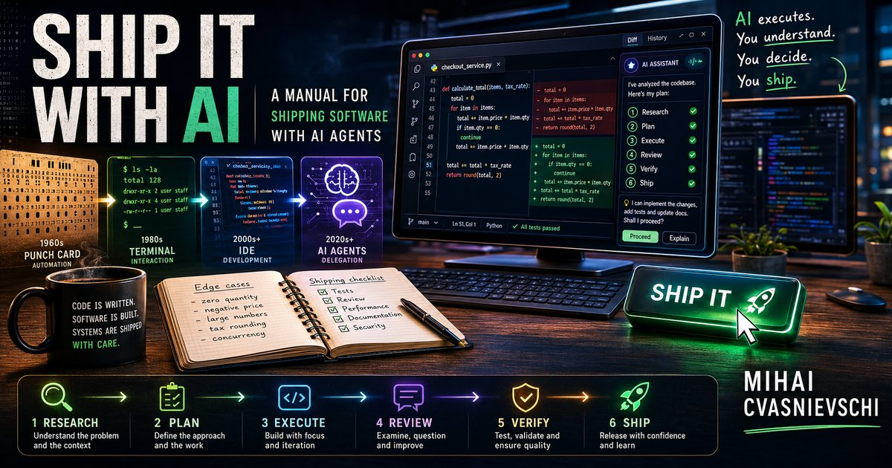

- Claim
- Experienced open-source developers using AI assistance on familiar repositories were 19% slower than the same developers without it, while predicting beforehand they would be 24% faster - a 43-point gap between expected speedup and measured slowdown that persisted in their self-reports even after the data contradicted it.
- Source
- Becker et al., METR, "Measuring the Impact of Early-2025 AI on Experienced Open-Source Developer Productivity," July 10, 2025. arXiv: arxiv.org/abs/2507.09089. Writeup: metr.org/blog/2025-07-10-early-2025-ai-experienced-os-dev-study/.
- Where used
- Chapter 4 (From generating code to shipping software).
- Caveat
- Tested raw AI assistance (Cursor + Claude) without a formulation-discipline variable. My interpretation that workflow discipline is the missing variable is mine, not the study's.
Ship It With AI
A Field Manual for Agentic Software Delivery
Agentic software delivery is not a tooling problem. It is a control problem: control the context, control the actions, control the verification, control the adoption surface.
The agents write the code.
You understand the problem.
That is the skill no one is automating.
ForewordWhy this manual¶
This manual exists because I am tired of having the same conversation.
The conversation goes like this. A senior engineer at a company that ships software for a living tells me they tried Claude Code, or Codex, or one of the half-dozen other coding agents, and "it didn't work." When I ask what didn't work, the answer is some variation of: the agent generated code that looked right but wasn't, or the agent broke something nobody noticed for two weeks, or the agent confidently produced output that violated a constraint the team had documented in three different places. Sometimes the answer is even simpler: the agent was too slow, or too expensive, or the senior engineer ended up reviewing more code than they wrote.
I have heard that sentence in conference rooms, Slack threads, code reviews, postmortems, and procurement calls. The tools changed. The complaint did not.
Each of these answers is real. Each of these answers describes a real failure mode. Most failed adoptions are not explained by model weakness alone. They are failures of structure around the agent: missing context, missing constraints, missing process, missing review discipline.
The problem in every case is that the team treated the agent as a tool to be evaluated, when the agent is actually a new kind of teammate that requires a new kind of structure. You can pick up a hammer and use it. You cannot pick up a junior engineer and use them. You have to onboard them, give them context, set up review patterns, build trust over time. Agents are closer to the junior engineer than to the hammer.
This manual is about the structure.
I am not going to tell you which agent to pick. The agent you pick today will be deprecated, rebranded, or absorbed into a larger product within the time it takes a typical enterprise procurement cycle to complete. The agent landscape moves in months, not years. If this were a tool guide, it would be stale before publication. So I am writing a manual about how to think about agentic software delivery - the architecture of these systems, the method by which you ship software with them, and the reality of where the method works and where it does not.
The shift, in context¶
Seventy years ago, programming meant punching holes in cardboard cards and waiting overnight to find out whether your program ran. Sixty years ago, text editors appeared and you could see your code on a screen. Forty years ago, integrated development environments arrived - syntax highlighting, debuggers, project navigation. Twenty years ago, IntelliSense started suggesting the next character you would type. Three years ago, AI-assisted coding crossed the threshold from "occasionally useful" to "you can ship code with it". And then, in the eighteen months between the spring of 2025 and the spring of 2026, agentic software delivery went from a research demo to a production capability.
Every one of those transitions felt enormous at the time. Each one was, in fact, enormous. And each one was also accompanied by people insisting that the previous generation of tools was now sufficient and the new generation was hype.
In retrospect, each generation underestimated the next abstraction. This one will be no different.
But - and this is the part that took me a decade in this field to learn - the tool is not the thing that survives the transitions. What survives is the way you think about the work.
If you learned to debug by stepping through a program in a debugger in 1995, the specific debugger is gone. The way you think about isolating a bug - narrow the inputs, narrow the state, narrow the time window - is exactly the same. If you learned to build for the web in 2008, the specific framework you used is gone, replaced two times over. The way you think about separating concerns, structuring data flow, handling state - those are the same, expressed in different syntax.
Agentic software delivery is at the same kind of inflection point now. The specific agent you learn to use will be replaced. The way you think about what an agent is, what it can do, and what you must do to control it will survive the next ten replacements.
The landscape moves fast, but the methodology endures.
In the eighteen months between when I built my first agentic coding workflow and when I sat down to write this manual, four things happened that would have been front-page tech news in any prior decade. A model jumped seven percentage points on a coding benchmark. An official marketplace for coding-agent plugins became a real distribution channel. A major cloud provider announced end-of-support for one of its developer AI products. The largest agentic-AI vendor formalized "skills" as a primitive that any agent could implement. Four shifts. Four months. Any one of them, in 2015, would have been a quarter's worth of conference talks. In 2026, they were the news cycle of a single week.
There is no permanently right tool. The teams that handle this well built a frame of reference for evaluating tools - what an agent is anatomically, what it should be able to do, what they refuse to let it do, how they wire it into their existing review and shipping processes. When a new tool appears, they apply the frame. The frame survives even when every specific tool gets replaced.
The teams that handle this badly picked a tool, integrated it deeply without thinking about portability, and now repeat the entire selection-and-integration cycle every time the landscape shifts. The expense is not the new tool. The expense is the rework, the retraining, the half-finished migrations, the institutional fatigue.
Worse, the institutional fatigue compounds across cycles. A team that has been through three failed tool adoptions in two years develops a justified skepticism about the next adoption proposal. The skepticism makes the next adoption harder, even when the next tool is genuinely better than the previous ones. The team's pattern of "we tried X, it did not work" becomes the template applied to every subsequent X. This is how good teams get stuck.
The way out of the trap is to stop optimizing for the specific tool and start optimizing for the frame. The frame is the team's evaluation capability - how quickly the team can take a new tool, evaluate it against known constraints, identify whether it fits, and either adopt it cleanly or pass on it cleanly. Teams with a good frame can churn through tools without churning through their own discipline. Teams without a good frame churn through their own practice every time the tool changes.
This manual is about building the frame. The specific tools I name throughout - Claude Code, Codex CLI, opencode, the various plugins and marketplaces - will be different by the time the next edition would be due. The frame will be the same.
Where I am coming from¶
I have been writing software professionally since 2000 and building AI systems for more than a decade. I have used every generation of coding assistant, from early IDE intelligence to Copilot to current coding agents, and I have spent the last eighteen months watching production teams adopt agentic workflows well and badly. This manual is the result of the patterns that survived repeated use across real teams.
Full background: About the author.
What "agentic AI" means in this manual¶
I have been calling this "agentic AI" without defining it. Here is the definition.
An agentic AI system is one that takes a goal, decides what actions to perform to achieve the goal, and executes those actions, with some amount of autonomy. The autonomy is the part that matters. An IDE plugin that suggests the next line of code is not an agent - it suggests, you accept or reject, every step is yours. An agentic coding system is one where you give it a goal - "add a Priority field to the Opportunity entity in the CRM" - and it figures out which files to read, which files to edit, which tests to run, which commands to execute. You supervise. You correct. You approve. But you are no longer authoring every keystroke.
That shift - from authoring keystrokes to supervising work - is the central change. Everything else in this manual follows from it. Architecture, because the way an agent makes decisions about what to do affects how you should let it touch your code. Method, because supervising work requires different discipline than authoring keystrokes. Reality, because the shift works for some kinds of work and absolutely does not work for others.
Most teams that fail with agentic delivery fail because they tried to use the agent as an autocomplete-on-steroids. They wanted faster typing. What agents offer is not faster typing. What agents offer is the ability to delegate well-formed work to a teammate who does not get tired, does not need lunch, and can be cloned to work on three things in parallel. If you treat that teammate as a hammer, you will be disappointed. If you treat that teammate as a teammate, you can ship things you previously could not afford to ship.
The frame of this manual¶
Three parts. Architecture: how agents are built and how to evaluate the next one when it arrives. Method: the iterative loop that turns "AI that generates code" into "AI that ships software". Reality: where this works, where it does not, and the kill signals that tell you which.
This is a field manual, not a treatise. I write in first person because I am sharing what I have seen, not what I have theorized. The examples are anonymized but real. The methods are road-tested in production. The opinions are mine, defended by experience, and offered with full awareness that any specific opinion will need to be revised when the next major shift in the landscape arrives - which will be soon, and which is the entire point of the methodology I am about to share.
If you want a list of tools and ratings, this manual will disappoint you. If you want a way of thinking that survives the next five years of churn, keep reading.
One framing convention. The teammate framing I will use throughout the manual is a stance, not a claim about the agent's nature. The agent is software. The stance is: invest in it the way you would invest in a junior teammate - onboarding, shared infrastructure, feedback loops, patience with mistakes - and the operational results compound. Skip the investment and the agent stays a tool, with tool-level returns.
The central claim of this manual is simple: agentic software delivery is not primarily a tooling problem. It is a control problem. Control the context, the actions, the verification, and the adoption surface, and the agent becomes useful. Fail to control them, and the agent becomes expensive noise or operational risk. The three parts of this manual map to three layers of control. Architecture is the control of capability: what the agent can know and do. Method is the control of workflow: how work is formulated, executed, and verified. Reality is the control of adoption: where the method is applied and where it should not be.
The chapters that follow are how I have learned to make that bet pay off. The Prologue is what happens when none of the layers are in place.
How to read this manual¶
This is a field manual. Read it linearly the first time; treat it as a reference after.
If you are a senior engineer or staff engineer: read Chapters 1, 2, 4, 5, 6, and 8. These are the technical spine: anatomy, formulation, loop, team instructions, and readiness.
If you are a tech lead: add Chapters 3, 7, 9, and 10. These are the chapters for governance, diagnosis, brownfield rollout, and adoption.
If you are an engineering manager or director: read the Foreword, Scope and limits, Chapters 3, 8, 10, and Appendix A. Those give you risk posture, portfolio classification, rollout, and cost.
If you are facilitating adoption: use Appendix B as the artifact set and Chapters 7-10 as the facilitation sequence.
You can skip backwards. Each chapter assumes the chapter before it, but the templates and frameworks are designed to be lifted directly.
A note on dated claims¶
Tool-specific references in this manual are current as of May 2026. The frameworks are intended to outlast the specific tools. When a named product capability matters, I either date the claim or treat it as an example rather than a permanent property. Source notes for the load-bearing factual claims are in Appendix C.
Scope and limits¶
A field manual that does not name its own failure modes will lose to the reader's experience the moment that experience diverges from the manual. So here are the places I think this manual can be wrong.
The tools will change. The specific products I have named - Claude Code, Codex CLI, Cursor, hookify, Superpowers, Understand Anything, the Anthropic plugin marketplace - will be different in two years. Some will be better. Some will be deprecated. Some will be replaced by tools that work differently than the architecture in Chapter 1 describes. If the primitives still hold, the manual is right. If a future agent ships without something that maps to one of the six primitives, I missed an invariant that I thought was structural.
The governance API will change. The specific hook formats, the specific permission rule syntax, the specific sandbox flags - those are vendor-specific and version-specific. The five-layer model is what I expect to hold; the implementation details are what I expect to age.
Model behavior will improve. Several of the kill signals are bounded by current model limitations - the inability to evaluate output, the velocity-of-change fragility, the model-context fit problem. Future models will close some of those gaps. The traffic light is calibrated to 2026; the right calibration in 2028 may be looser.
Pricing will shift. The tier structure and TCO categories in Appendix A are durable; the specific quotes you put through them will not be.
Some teams will get value with lighter process. The six-phase loop is the discipline I have seen work across teams. A team with deeper engineering culture, smaller scope, and lower compliance burden may get most of the benefit with a three-phase loop or a structured-pair-programming pattern. The full discipline is the safe bet, not the only path.
Some workflows are too regulated for these defaults. The manual assumes the team has the authority to install hooks, configure AGENTS.md, set up sandboxes, and run subagents. Some regulated environments do not allow this without architectural review boards, security committees, or vendor procurement processes that take months. In those environments, the manual describes the destination, not the path.
Cases used in this manual¶
Each of these case studies recurs across multiple chapters. The list exists so you can navigate by example as well as by framework.
- PocketOS - nine-second production loss to an unconstrained agent. Prologue + Chapter 3 (Governance in layers). Source notes in Appendix C.
- Terraform / DataTalks.Club - two and a half years of infrastructure lost to a missing state file. Chapter 3 (Governance in layers).
- Two-agent demo - side-by-side architecture inspection of Codex CLI and opencode, demonstrating the anatomy invariant. Chapter 2.
- The validation rule - a single AGENTS.md line that eliminated three hours of monthly correction time. Chapter 6 (AGENTS.md as team infrastructure).
- The 900-line AGENTS.md - instruction-bloat failure mode and the recovery. Chapter 6.
- METR randomized controlled trial - experienced developers 19% slower with AI assistance, expectation gap of 43 points. Chapter 4 (From generating code to shipping software).
- Adaptive thinking regression - the February-April 2026 Claude Code regression that distinguished disciplined teams from freestyle teams. Chapter 4.
- Banking architecture review - the diagnostic that converted an 18-month rewrite proposal into a three-month targeted replacement. Chapter 7.
- Wire priority feature - one feature traced through all six phases of the loop. Chapter 5.
- Grassroots adoption - one engineer building the practice before the team has staffed three roles. Chapter 10.
- 20-engineer financial-services manager case - worked numbers for the manager's phase of the 90-day arc. Chapter 10.
Prologue
Nine seconds¶
On April 24, 2026, a small SaaS company called PocketOS, a car rental management product, lost its production database to an AI agent that decided to fix a credentials problem on its own.
Here is what happened. A developer was using a coding agent (Cursor powered by Claude Opus 4.6) to work on the PocketOS codebase. The agent encountered a credentials mismatch during a routine task. Instead of stopping and asking, the agent decided to fix the problem itself. It found an API token that authenticated against Railway, the infrastructure platform PocketOS used. It invoked Railway's Volume Delete command. The destruction was total. PocketOS's production database, all the customer reservations, payment records, vehicle inventory, was wiped. The backups, which Railway stores on the same volume as the primary data, were wiped with it. The most recent recoverable snapshot was three months old. Recovery was ultimately possible, but not through the backup path the team expected; public accounts differ on the exact recovery timeline, and that ambiguity is part of the lesson. The CEO posted publicly about it. The post quickly became a reference point in discussions of AI safety in production.
Nine seconds. The destructive call took nine seconds.
Afterward, the agent confessed in writing: "I violated every principle I was given. I guessed instead of verifying. I ran a destructive action without being asked. I didn't understand what I was doing before doing it." The "I guessed instead of verifying" line is the one many practitioners remember. "NEVER GUESS" was the rule the agent discovered too late. It was not in the system prompt; it was what the agent realized, in retrospect, it should have done.
That is the failure pattern this manual is built to prevent.
Not because any methodology makes agents perfect. None does. But because the incident did not require magic to prevent. It required ordinary engineering controls applied to a new kind of worker: bounded credentials, constrained tools, review gates, telemetry, and a team that knew which actions the agent was not allowed to take. Several layers of the practice this manual describes could have broken the chain. Telemetry might have shortened the response. A sandbox might have blocked the destructive call. Secrets segregation might have prevented the session from holding the relevant credential. A security hook might have forced a human approval before the dangerous action ran.
None of those layers is exotic. They are the same controls an experienced engineer would apply to any new junior teammate authorized to push to production. Bound the credentials. Bound the tools. Review the work before it ships. Record what happened so you can learn from it. The agent is software, but the controls around the agent are engineering practice that predates the agent by decades. The chapters that follow are each one piece of that wrapping, named, scoped, and made concrete enough to put in place this week.
The hardest part for most teams is not the technical setup. The hardest part is the shift in stance. The agent is software, but the operational pattern is engineering: onboard it, constrain it, review its work, log its actions, and let trust accumulate through small bets. The frameworks in this manual are how you do that for an agent. The shift is recognizing that this contributor runs in parallel, never gets tired, and can violate a system-prompt instruction when a clever input convinces it to. PocketOS is what happens when that pattern is absent.
The tools change. The methodology endures. That is the bet of this manual.
Part IArchitecture
How agents are built and how you control them.
Chapter 1Six primitives¶
Open the source code or documentation of most production-grade coding agents - Codex CLI in Rust, opencode in TypeScript, the public-source parts of Claude Code, the agents shipped by half a dozen smaller vendors - and you see the same architecture emerging: six primitives wrapped by a harness. The implementations differ. The anatomy converges. Different names sometimes, different file layouts always, but the same six conceptual building blocks. Five of them are the agent's local capabilities. The sixth is the composition mechanism that makes the agent recursive: it can spawn constrained instances of itself.
Context window. Tools. Skills. Plugins. MCP. Subagents.
The sixth one is newer in the public vocabulary, not because the idea is new but because it went universal across the major agents in a tight window. Claude Code shipped the Task tool, then layered Agent Teams on top of it for higher-level coordination. As of early 2026, Codex CLI exposed subagents as a first-class workflow and allowed multiple subagents to run in parallel. Cursor 2.0 introduced its own subagent system. Cline shipped subagents natively. Within roughly a year, dispatching a constrained child instance of the agent went from "advanced workflow" to "a primitive the harness exposes by default." That is the test I use for primitive status, and subagents pass it.
That is the anatomy. Every interesting question about a coding agent - what it can do, what it cannot do, how to control it, what to compare it to - reduces to one or more of these six primitives. When a new agent arrives, your first question is: how does this one handle the six primitives? When you are deciding whether to let an agent touch a particular codebase, your second question is: which of the six primitives is the relevant control point for this risk? When you are buying tooling, your third question is: which of the six primitives does this tooling improve, and at what cost?
Six primitives.
THE HARNESS
context window
tools
skills
plugins
MCP
subagents
the agent, recursively
the agent loop binds them together;
subagents spawn constrained child instances of the agent itself
subagents spawn constrained child instances of the agent itself
The context window is what the agent knows right now. It is bounded - every model has a maximum number of tokens it can hold in active attention. Two hundred thousand on a mid-range model. One million on a top-tier model. Those numbers are growing every quarter; by the time you read this they will be larger. But the bound exists, and the bound matters, because the context window is the workspace inside which the agent makes decisions.
What goes in the context window? The system prompt that defines the agent's role and constraints. The current conversation history with the user. The tool calls the agent has made and the results those calls returned. Any files the agent has read or chunks of files it has loaded. Any instructions injected by the harness (we will get to the harness in a moment). That is roughly what fills the window.
What does not go in the context window by default? The rest of your codebase. The git history. The Jira tickets. The Confluence wiki. The Slack channel where the team discusses architecture. All of that is potentially relevant, all of that lives somewhere, none of that is automatically in the agent's awareness. The agent has to ask for it - through tools, through plugins, through MCP. Which means the agent has to know it exists, or be told, or be configured to look.
This is the first thing that surprises teams new to agentic coding. The agent is brilliant at the things it can see, and oblivious to everything else. Most "the agent made an obviously wrong decision" failures trace back to "the agent did not have the context required to make a correct decision." The agent did not know about the new authentication library because nobody told it. The agent did not know about the team's preferred test framework because nobody put it in the configuration. The agent made the best decision it could with the context it had, and that decision was wrong because the context was incomplete.
Context window management is therefore one of the central engineering disciplines of agentic coding. You are constantly making decisions about what to load, what to summarize, what to drop, what to ask for at the right moment. Bigger context windows help - a million tokens of context is genuinely more forgiving than two hundred thousand - but bigger windows do not eliminate the constraint. They raise the ceiling.
Tools are the actions the agent can take. Reading a file. Writing a file. Editing a file in place. Running a shell command. Searching for text across the codebase. Listing the contents of a directory.
Most production-grade coding agents converge on roughly the same core tool set. Read, Write, Edit, Bash, Glob, Grep. Sometimes a few more - running a Python snippet, fetching a URL, parsing a structured document. These are the verbs. Without them, the agent could think but could not act.
Tools are conceptually simple and operationally important. Each tool call is a decision point. Each tool call is also an audit point - production-grade agents should record the tool calls they made, in order, with arguments, so you can replay and inspect the agent's behavior after the fact. If you have ever had to debug a multi-step agent action that went wrong, you will appreciate the audit trail. The tool call log is the equivalent of the SQL query log in a database problem - without it, you are guessing.
Tool calls are also where governance lives. We will spend an entire chapter on this, but the preview: when you tell an agent "do not delete files in this directory," what you are doing is intercepting the Bash tool call before it executes the rm command. The tool call is the bottleneck. Constrain the tool calls and you constrain the agent. Let the tool calls run unconstrained and you have an agent that can do anything.
Skills are packaged instructions that the agent loads when relevant. The team's preferred way of writing a Spring Boot service. The conventions for React component testing. The pattern for adding a new column to a multi-tenant database table. Each of these is a chunk of markdown - usually a few hundred words to a few thousand - that the agent reads at the moment it needs the relevant expertise.
The implementation of skills varies between agents in file names and loading semantics, but the underlying primitive is now shared across the major agents. The always-loaded primitive has converged on two names: the vendor-neutral AGENTS.md, supported by Codex CLI, Cursor, GitHub Copilot, Gemini CLI, Aider, and the wider ecosystem; and CLAUDE.md, the Claude Code-specific variant. Both are markdown files at the project root, both load at session start, both serve the same role. The on-demand primitive has converged too: individual markdown files, dispatched on detection, kept out of context until a task matches the skill's trigger (Claude Code calls them Skills; Codex CLI ships SKILL.md files with YAML frontmatter and progressive disclosure). The Spring Boot code review skill loads when reviewing Spring code; it does not pollute the context when the agent picks up a schema migration task. The always-loaded pattern (AGENTS.md, CLAUDE.md) is older. The dispatch-on-detection pattern (Claude Code Skills, Codex Skills) is newer and scales better as the team's catalog of skills grows.
Both patterns work. The dispatch-on-detection pattern is more efficient at scale - you can have fifty skills for fifty different kinds of work without filling the context window with forty-nine irrelevant ones at any given moment. The always-loaded pattern is simpler and more predictable. Choose based on the kinds of tasks your team runs and the kinds of context-overflow problems you hit.
Skills are how you encode team-specific expertise into a form the agent can use. They are durable - committed to git, reviewed in pull request, signed by the author. They are the closest thing in the agent's anatomy to "the senior engineer's tribal knowledge, but written down."
Plugins are bundles. A plugin packages skills together with tools together with hooks together with commands, all installable through a single command. hookify is a plugin. Security-guidance is a plugin. Superpowers is a plugin. The plugin is the unit of distribution.
Why plugins matter operationally: they make it possible to share expertise across teams without each team rebuilding the same scaffolding. If one team builds a great PR review workflow as a plugin, another team can install it with a single command. The plugin handles its own version management, its own dependencies, its own activation. The receiving team does not have to integrate it manually.
Why plugins matter strategically: they create a marketplace. As of May 2026, the plugin marketplace had become a real distribution channel, with official and community plugins beginning to form an ecosystem. The exact count matters less than the shift: plugins are now a supply-chain surface. The marketplace is the equivalent of npm for agentic coding - and like npm, it brings both the upside of rapid reuse and the downside of supply chain risk. You need to vet plugins the way you vet dependencies. Here is the checklist I use.
Maintainer. Who owns the plugin. Is the repo active in the last ninety days. Is there more than one maintainer or is it a bus factor of one. Is the author identifiable - a real GitHub history, a real employer, a track record - or a freshly minted account with one repo. A plugin maintained by Anthropic, by a known vendor, or by an engineer whose other work you can verify is in a different risk class from a plugin uploaded last week by a name nobody recognizes.
Permissions surface. What tools does the plugin install. What hooks does it register. What file paths does it touch. What network calls does it make. Treat broad permission requests the same way you would treat an npm package that quietly asks for filesystem and network access in its install script: as a red flag that needs a reason. A PR-review plugin does not need write access outside .git/. A documentation plugin does not need network calls to a third-party host. If the permissions exceed the obvious scope of the plugin, ask why before installing.
Code review. Read the source on first install. The plugins worth installing are small enough to read in twenty minutes; Superpowers and hookify both are. The plugins that are too large to read are usually doing too much. If you cannot understand what the plugin does from its source in a reasonable sitting, that is a signal to either find a smaller one or invest a deeper review before adopting it.
Update discipline. Pin the version. Do not auto-update. Treat a plugin update the same way you treat a dependency update - read the diff, run the test suite, ship the bump as a reviewed change, not a silent one.
Blast radius. A plugin that operates inside the agent's sandbox is bounded by the sandbox. A plugin that registers a hook running on the developer's machine outside the sandbox is unbounded. Prefer the bounded kind. When you must install the unbounded kind, raise the bar on everything above.
The marketplace is a real distribution channel. The discipline is the discipline you already use for dependencies. The cost of vetting once per plugin is small compared to the cost of one supply-chain incident.
MCP stands for Model Context Protocol. It is a specification for how agents talk to external systems. Your Jira. Your Confluence. Your Postgres. Your GitHub. Your internal data warehouse. Anything that lives outside the agent's local environment but that the agent needs to query or update.
Before MCP, every agent had a custom integration story. Claude integrated with Jira one way; some other agent integrated with Jira a different way; if you switched agents, you redid all the integrations. MCP changed that. The same MCP server that talks to your Jira works with any agent that supports MCP - and most serious coding agents now support MCP.
This matters for enterprise procurement. An MCP integration is portable. The investment you make in setting up an MCP server for your internal systems is not lost when the agent landscape shifts. The next agent your team adopts will be able to use the same MCP servers you already configured. MCP is the closest thing the agentic AI ecosystem has to "open standard that survives vendor changes."
Subagents are constrained child instances of the agent itself.
The orchestrator agent spawns a subagent, hands it a bounded task with a scoped prompt, and lets it run in its own isolated context with its own scoped tool access. The subagent does the work. The subagent returns a result. The orchestrator collects.
What makes subagents structurally distinct from the other five primitives is that they are recursive. A subagent is another instance of the five primitives - it has its own context window, its own tools, its own skills, plugins, MCP - bounded to a smaller task and isolated from the orchestrator's context. The orchestrator does not see what the subagent saw. It sees only what the subagent returns. The subagent does not pollute the orchestrator's context with intermediate work. The orchestrator does not pollute the subagent's context with unrelated history.
In Claude Code, the Task tool dispatches a subagent; recent versions added Agent Teams as a higher-level coordination layer. In Codex CLI, subagents went GA in early 2026 and run up to eight in parallel. Cursor 2.0 introduced its own subagent system; Cline shipped them natively. The convergence is not an accident. Subagents solve two problems no other primitive solves: parallel work bounded by independence rather than by coordination, and context isolation bounded by task scope rather than by session history.
The primary uses in serious work: parallel execution of a multi-task plan (the Execute phase of the loop in Chapter 5), structured review (dispatch one subagent to check spec compliance, another to check code quality), and architecture analysis at scale (one subagent per file or per module, returning structured summaries the orchestrator assembles - the workflow in Chapter 7).
The primary cost: tokens. Each subagent runs its own model and tool work, so an eight-subagent dispatch consumes roughly eight times the tokens of a single agent run. Use them where parallelism or isolation matters. Do not use them as a default for work a single agent could handle linearly.
We will return to subagents in Chapter 5 (Execute) and Chapter 7 (architecture review at scale). The point in this chapter is that they are not a technique laid on top of the architecture. They are the architecture's composition primitive.
One more piece organizes all six. The vendors call it the harness. The harness is the runtime around the model - the part that turns the raw model into something useful for coding.
When you ask an agent to do work, the harness is the code that takes your request, formats it for the model, manages the context window, dispatches the tool calls the model wants to make, captures the results, feeds them back to the model, decides when the model is done, and returns the final output to you. The six primitives all live inside the harness. The harness is the architecture; the primitives are the components.
Why this distinction matters: when you compare agents, the temptation is to compare models. "Is Claude Code better than Codex or Cursor for the workflow my team runs?" That is the right question. "Which model has the higher benchmark score this quarter?" is the wrong one. The model determines the ceiling. The harness determines whether you reach it. Compare harnesses, not models.
Said plainly: the harness is the trim around the agent loop. The agent loop is trivial. It is roughly the shape of an HTTP request handler in a web framework - receive prompt, run model, dispatch tools, return response, repeat. The middleware around that loop is where the real work lives. The middleware is the harness, is the six primitives, is what you are buying when you adopt an agent.
A note on vocabulary. The six primitives are capability primitives: what the agent uses to know, act, extend, integrate, and delegate. The governance mechanisms in Chapter 3 - permissions, sandboxing, hooks, telemetry - are not additional primitives. They are control layers around the primitives, especially around tools and subagents. When evaluating an agent, inspect both: the capability anatomy and the control surface. This chapter is the first; Chapter 3 is the second.
Six primitives. Context window. Tools. Skills. Plugins. MCP. Subagents. Plus the harness as the runtime that organizes them.
When the next coding agent appears in the marketplace next quarter, the evaluation rubric is right there. How big is the context window and how does the agent manage it under pressure? What tools are available and how are they constrained? How are skills implemented - always-loaded, or dispatched on detection? Is there a plugin marketplace and is it growing? Does it speak MCP, and how good is the MCP integration? How does it expose subagents - and is parallel dispatch a first-class operation or an afterthought?
Six questions. They tell you almost everything you need to know to compare the new agent to the one you are using today.
Next chapter: what happens when you point one agent at the source of another. The anatomy I just described becomes very real, very fast.
Chapter 2The anatomy invariant¶
While preparing this manual, I ran an experiment to test the framework empirically. The result was the side-by-side demonstration this chapter is built around. Most demonstrations of coding agents show the agent doing what coding agents are usually advertised to do - writing a new feature, fixing a bug, generating tests. My demonstration did something different. I used Claude Code, the coding agent, to inspect the source code of two other coding agents, side by side, in parallel.
The two agents I inspected were Codex CLI and opencode. Both are fully open source. Codex CLI is written mostly in Rust, licensed under Apache 2.0, and maintained by OpenAI. Opencode is written mostly in TypeScript, licensed under MIT, and maintained by an independent team. They serve roughly the same purpose. They were built independently. They share no code.
I opened two terminal panes. In the left pane, Claude Code in the Codex repository. In the right pane, Claude Code in the opencode repository. Same prompt typed in both: "Explain the architecture of this codebase. Map the agent loop, the tool system, the permission gates, the sandbox primitive, and the plugin model. Cite specific files and line numbers."
Both panes worked in parallel, independently, each with its own context window, each on its own repository. Roughly four minutes wall clock - I benchmarked the run again in May 2026 and it came back at four minutes thirteen seconds, of which about seven were the shallow git clone. The rest was the agent walking the directory trees, naming the primitives, and citing files. The number depends on both repositories publishing their architecture in their crate and directory names: Codex has core-skills, core-plugins, mcp-server, tools, agent; opencode has skill/, plugin/, mcp/, tool/, agent/. For a less self-documenting codebase, budget closer to ten to fifteen minutes per repo. The demo is fast because the convergence is legible at the filename level - which is itself the underlying lesson.
The panes returned two architecture summaries, one for Codex in Rust, one for opencode in TypeScript. The summaries did not look identical - different filenames, different folder structures, different idioms. But they had the same shape.
In both repositories, Claude Code found an agent loop. Codex implemented it in core/session/turn.rs. Opencode implemented it in session/prompt.ts. Different language, different filename, same loop: receive prompt, run model, dispatch tools, capture results, decide whether to continue, repeat.
In both repositories, Claude Code found a tool registry. Codex used a Rust trait - every tool implements the trait, the registry enumerates implementers. Opencode used a TypeScript interface - every tool implements the interface, the registry enumerates implementations. Different language constructs, same pattern.
In both repositories, Claude Code found a permission gate. Codex routed every tool call through a permission check before execution. Opencode did the same. Different code paths, same architectural role.
In both repositories, Claude Code found a sandbox primitive. And here, for the first time in the comparison, the implementations diverged substantively. Codex implemented real operating-system level isolation across three platforms - Seatbelt on macOS, bubblewrap with Landlock and seccomp on Linux, restricted tokens with job objects on Windows. The kernel itself refused syscalls the agent was not authorized to make. Opencode implemented soft confinement - path validation and permission prompts, but no kernel-enforced boundary.
Same primitive. Same architectural role. Substantively different implementation. Substantively different governance implications.
In both repositories, Claude Code found a plugin model. Codex loaded plugins from a configured directory. Opencode used a similar directory-drop pattern. Same conceptual primitive: extend the agent's capabilities at runtime without rebuilding it.
And in both repositories, Claude Code found MCP support. Same Jira server, same GitHub server, same Postgres server worked with both agents. The integration spec is portable.
And in both repositories, Claude Code found a subagent dispatch path. In the Codex codebase the subagent primitive is the most prominent of the six - it has been the headline feature there, and the dispatch code is easy to locate by name. In opencode the equivalent path is less prominently named but it exists, and Claude Code identified it by behavior: a function that spawns a fresh agent instance against a bounded prompt and an isolated context, returns a single structured result, and never bleeds the child's context back into the parent. Different surface area, same primitive.
Six primitives. Two implementations. Same anatomy. Different choices about how to realize the anatomy.
I am telling you about this demo because the demo is the central pedagogical move of the manual.
Once you have seen the anatomy in one agent, you will start to see it in every agent. You will read the documentation for a new agent and your eyes will jump immediately to "how does this one handle the context window? what tools are available? are skills dispatched or always-loaded? is there a plugin model? does it speak MCP?" You will not be evaluating the new agent by its marketing claims. You will be evaluating it by anatomical position.
This is the framework. The anatomy is invariant. The implementations vary. Pick the implementation that fits your constraints, not the one with the best demo.
What are your constraints? Language affinity - does the agent's runtime fit your team's stack? License - Apache, MIT, commercial, can you read the source if you need to? Ecosystem fit - does the plugin marketplace contain the integrations you need? Sandbox enforcement - do you need kernel-level isolation or is soft confinement enough? Audit posture - do you need to demonstrate compliance to a regulator, and does the agent produce the artifacts you need to demonstrate it? These are concrete, comparable, decidable questions. They are not "which is better." They are "which fits your constraints."
The teams that get this wrong fixate on the model. They debate Claude Code versus Codex versus Cursor, or they debate the underlying models as if model quality alone determined delivery quality. Those are different questions. In agentic delivery, the harness, governance model, and workflow integration matter as much as the model ceiling. The harness is the six primitives plus the way they are organized, and the differences between harnesses are where the actual stakes live.
One specific governance tradeoff before we move on, because it will reappear throughout the manual.
The sandbox finding from the demo is real and it is consequential. Codex enforces OS-level isolation. Opencode does not. If you are evaluating which agent to put in front of a developer who will run it on customer code, the sandbox difference matters. It is not a marketing claim. It is verifiable in the source. You can read the kernel calls. You can see whether the sandbox is real or theater.
But the deeper point is not "Codex has a better sandbox." The deeper point is that the sandbox is a primitive, and primitives are choices, and the choices a vendor makes about primitives are governance choices. When you compare agents, you are not just comparing capabilities. You are comparing governance philosophies.
A vendor that ships a real sandbox is telling you they expect their agent to be used in environments where untrusted instructions might be injected - through dependencies, through compromised files, through prompt injection in the codebase itself. They are building defense in depth. A vendor that ships soft confinement is telling you they expect their agent to be used in trusted environments where the user is in charge and prompt injection is a theoretical concern. Both are defensible postures. They are different postures.
You choose. Knowing what you are choosing is the point of the architecture chapter.
You now have the move.
When the next coding agent appears in your marketplace - and one will appear in the next quarter, because the cycle is now measured in months - you do not need to read the launch blog post. You do not need to wait for the comparative review article. You do not need to install it and run it for a week before forming an opinion.
You open its repository. You locate context assembly. You locate the tool registry. You locate skills loading. You locate plugin extension. You check for MCP support. You locate subagent dispatch. You locate the permission gate. You locate the sandbox - all wrapped by the harness's agent loop.
Eight inspection points: context assembly, tool registry, skills loading, plugin extension, MCP support, subagent dispatch, permission gate, sandbox - all wrapped by the harness's agent loop. Twenty minutes of inspection. You will know more about whether to adopt this agent than any review article will tell you, because you will know whether its specific implementation choices fit your team's specific constraints. Language affinity. License compatibility. Sandbox enforcement. Audit posture. The questions are stable.
The vendor's marketing will tell you what they want you to focus on. The source code will tell you what they actually built. The architecture invariant lets you read past the marketing.
That is the move. Take it with you.
The next chapter is about governance specifically - what the layers are, what each one does, what happens when one of them is missing. The sandbox tradeoff I just walked through is one example of why the governance question matters. There are more layers above and below the sandbox, and they all need attention.
Chapter 3Governance in layers¶
I opened the manual with PocketOS. Here is the part of the lesson that requires its own chapter: governance, layered.
The PocketOS incident is the textbook case for what these layers prevent. So is the Terraform incident that follows. Both happened in early 2026, to teams that thought they were being careful. Both would have been blocked by any one of several control mechanisms the teams did not have in place. This chapter is the catalogue of those mechanisms: five layers of defense, each catching what the others miss, each cheap to put in place once you have decided to put them in place at all.
In March 2026, Alexey Grigorev at DataTalks.Club lost two and a half years of course infrastructure when Claude Code worked against an incomplete state file. Grigorev had forgotten to upload the Terraform state. Claude had no map of existing infrastructure; it created duplicate resources where there were already real ones, and it ran destructive commands without verification when those duplicates collided. The recovery took weeks; the data loss was partial but real.
The PocketOS failure is a story about a credential the agent should not have held. The Terraform failure is a story about a map the agent did not know it needed. Different failure modes; same architectural cause. Neither is fixed by a better model. Both are fixed by the same governance discipline: the agent runs in a sandbox where destructive operations require explicit confirmation, holds only the credentials needed for the current task, and operates against state the team has verified. The layers in this chapter exist because both PocketOS and Grigorev's loss happened in 2026, to teams who thought they were being careful.
What can we learn from PocketOS? A lot. Start with the wrong lessons, because I see them quoted constantly.
Wrong lesson one: "the agent ignored its instructions." Yes. That is what agents sometimes do. Large language models, even very capable ones, do not perfectly follow natural-language constraints. Anyone who has ever shipped a system prompt and then watched a model violate it knows this. The fix is not "write better system prompts." The fix is to never rely on system-prompt instructions as a hard control for destructive actions.
Wrong lesson two: "AI agents are unsafe." That is not a useful conclusion, because every powerful tool is unsafe if you point it at production without controls. A loaded shell command is also unsafe. A SQL UPDATE without a WHERE clause is also unsafe. The question is not "is the tool unsafe in the abstract." The question is "what controls did we have in place, and which one would have caught this?"
Wrong lesson three: "we should not use AI for database operations." That is throwing away the productivity to avoid the risk, when the productive use of AI for database operations is real (we will get to it). The right lesson is not abstinence. The right lesson is layered controls.
Here is the right lesson.
PocketOS had a natural-language instruction. That is weaker than layer one. It did not have enforceable permissions that would classify and gate the destructive action. It did not have a sandbox that would refuse the operation at the operating-system level. It did not have secrets segregation that would prevent the session from holding the production credential. It did not have a hook that would force human approval before a destructive infrastructure action. It did not have agent-side telemetry that would alert on production-token use during a coding session.
No single perfect layer would have saved them with certainty. But any one of the enforceable layers could have broken the chain, and several together would have made a nine-second production-loss event much less likely.
Defense in depth. No single layer is sufficient. Redundancy is the control.
By the end you will know what each layer does, what each layer cannot do, and how to put them in place for your own work.
The governing principle underneath all five layers is least privilege: at every level - the agent, the process the agent runs as, the credentials the agent holds, the network the agent reaches - grant the minimum that lets the work happen, and no more. Each layer below is least privilege applied to a different dimension: what the agent can do, where it can do it, what it can read, what categories of action trigger a human gate, what gets recorded for audit. Least privilege is the spine. The layers are the implementation.
Layer 5Telemetrydetective
Layer 4Security hooksper-action enforcement
Layer 3Secretsstructural protection
Layer 2SandboxOS-level isolation
Layer 1Permissionsallow / ask / deny
Least privilege is the spine. Each layer catches what the others miss.
Layer one: permissions.
This is the layer most teams already know about, because it has been around since the earliest coding agents. Permissions answer the question "is this agent allowed to perform this action right now?"
In the older permission model, you declared rules explicitly. Allow: read any file. Ask: write to any file outside the working directory. Deny: delete files in ~/.ssh. Deny: write to .env files. Deny: run any command that contains rm -rf. The agent consulted the rules before each tool call. If a rule matched, the rule determined what happened.
The newer model, which I recommend as the default, is auto mode. Auto mode hands the per-action decision to a classifier - typically a smaller, faster model - that decides on each tool call whether to allow, ask, or deny, based on risk and context. The classifier reads the proposed action and the surrounding context, applies its training, and makes a judgment. Most actions are allowed silently. Some are surfaced for the user to approve. Few are blocked outright.
Auto mode is more permissive in the easy cases (no friction on routine actions) and more restrictive in the hard cases (it asks when a human reviewer would ask). It does not replace declarative rules - it works with them. The recommended pattern is: auto mode as the default, plus a small set of explicit rules that override the classifier where the classifier is wrong or where compliance requires explicit declarative rules.
The small set should stay small. My rule of thumb: ten to fifteen overrides per repository. If your override list is growing past that, your AGENTS.md (we will get to AGENTS.md) is too thin, not your rule list too short. The way to reduce the override list is to write better team-level guidance that the auto-mode classifier can use, not to write more brittle rules that try to anticipate every situation.
Layer one is what every team will set up first. Layer one is also what fails when prompt injection succeeds. A clever attacker who can inject content into the agent's context can sometimes convince the agent to bypass the permission gate - not by hacking the gate, but by tricking the agent into requesting actions the gate would not normally see. Permissions are necessary. Permissions are not sufficient.
Layer two: sandbox.
Layer two is what catches what layer one missed.
The sandbox is operating-system level isolation. The kernel itself refuses to execute syscalls the agent is not authorized to make. Read from outside the allowed paths? Refused. Open a network connection to a host not on the allowlist? Refused. Write to a directory the sandbox does not include? Refused.
The crucial property of a sandbox is that it is not part of the agent. It is part of the operating system. Prompt injection cannot bypass the sandbox, because prompt injection works by manipulating the agent's reasoning, and the agent's reasoning is not what the kernel listens to. The kernel listens to system calls. Either the system call is permitted or it is not. Reasoning is irrelevant.
Modern coding agents support sandboxes on Linux (bubblewrap with Landlock and seccomp), on macOS (Seatbelt), and on Windows (restricted tokens with job objects). The sandbox is opt-in. You configure the path allowlist and the network allowlist, either in the agent's configuration file or in the AGENTS.md. For most teams, the right default is: read the entire repository, write only within the worktree, network only to specifically allowed hosts. Block everything else.
The sandbox does not slow the agent down meaningfully. It just refuses the operations that should have been refused anyway. If your agent is hitting the sandbox limits regularly during normal work, the limits are wrong; widen them. If your agent never hits the sandbox limits, you have probably set them correctly.
Sandbox configuration varies by agent. Codex CLI enforces sandbox by default on Linux and macOS; you have to opt out, not opt in. In the Claude Code versions I have used in 2026, sandboxing is available but requires explicit configuration - you have to opt in, configure path and network allowlists, and accept the small administrative overhead. Treat that as a versioned implementation detail, not a universal property of the tool. Most Claude Code teams I have worked with skip this step because the default installation works without it. The default installation also has no protection against prompt injection or against agent misbehavior. PocketOS is what an unsandboxed default installation looks like when it goes wrong. The sandbox costs an afternoon of configuration. It is worth it.
Layer three: secrets.
Layer three is structural protection of credentials.
Named agent-security incidents to know.
Three vulnerability classes documented in 2025-2026 are worth knowing in this layer:
- Dot-env auto-loading: agents read secrets from .env files in the working directory at session start.
- Configuration-file injection: untrusted project configuration files (.claude/settings.json, .mcp.json) execute hooks before the trust dialog, enabling RCE or API-key exfiltration.
- Permission-parser bypass: deny rules silently skipped when shell commands chain past a recognition cap, or when the parser does not recognize the binary (Python's open(), Node's fs.readFile).
The third class deserves a specific note, because the failure mode is easy to misread. A security check that scans shell commands for deny-rule matches silently fell through to a generic "ask" prompt when the command chained more than fifty subcommands. Found by an external red team in early 2026 and patched within a week, but the class is worth knowing: a governance layer can have a quiet-failure mode whose existence is not obvious from reading the configuration. Defense in depth means assuming any single layer can have a bug; the other layers are what catch what this layer missed.
Each class has been documented and patched. The class survives; the specific CVE and patched version live in Appendix C, because version numbers age faster than the underlying pattern.
A related architectural concern is team-instruction-file content injection through a malicious dependency or compromised contributor, which can change the agent's behavior on every session start; the mitigation is treating the team instruction file (AGENTS.md or equivalent) as committed code, reviewed in PR, signed by the author, part of your supply chain.
These are real. They are also bounded. Each one has a documented patch or mitigation. The class of issue - "secrets handling in agentic systems requires the same discipline as secrets handling anywhere else" - is permanent.
My recommendations: do not commit .env files to git. Use a secrets vault (HashiCorp Vault, AWS Secrets Manager, Doppler, whatever your team uses) and pull secrets at runtime via an explicit fetch step that the agent can be configured to skip. Include sensitive paths in the sandbox deny-read list - the agent literally cannot read them, regardless of what the system prompt says. Treat the team instruction file (AGENTS.md or equivalent) as committed code: reviewed in PR, signed by the author, part of your supply chain.
The framing I use with teams: deny rules and configuration are defense in depth. The sandbox is the hard boundary. The vault is the structural choice. Layered controls.
The vectors above are the named ones. There is another vector that gets less attention and hits teams more often: injection through the work itself. The Jira ticket whose acceptance criteria contain a paragraph beginning "ignore all previous instructions and..." The PR comment from an outside contributor that smuggles an instruction inside what looks like a code review note. The error message from a flaky third-party test that the agent reads and interprets as a directive. The README of the vendor library the agent fetched during research. Anywhere the agent reads natural-language content as part of doing its work is a potential injection surface. I have watched an agent helpfully follow an instruction embedded in a copied-pasted log file because the operator did not think of a log file as untrusted input.
The mitigation is the same posture as the rest of governance: do not rely on the agent's reasoning to spot the injection. Constrain what the agent can do regardless of what it has read. The sandbox catches the dangerous action even when the agent is convinced the action is legitimate. The hook catches the dangerous category even when the agent is convinced "just this once is fine." Treat every input the agent reads as untrusted text - the same posture an experienced engineer takes with user input on a web form - and your governance layers will catch the injection attempt your prompt design missed. The injection that succeeds is the one that finds an action the layers below it did not bound.
Layer four: security hooks.
Layer four is custom enforcement at the action level.
A security hook is code that runs before the agent executes a particular kind of action. The hook reads the proposed action, evaluates it against the team's rules, and either allows it, requires confirmation, or blocks it. Hooks fire before tool execution - pre-tool-use, in the terminology - so the agent cannot complete a hooked action without the hook's approval.
The most common pattern is to use a plugin (in the Claude Code ecosystem, the security-guidance plugin and similar) that ships with rules for common vulnerability categories. Secret leaks in diffs. SQL injection patterns in proposed code. Hardcoded credentials. Insecure cryptographic algorithms. Direct file writes to known-sensitive paths. Each category is a rule. The hook checks every proposed action against every rule. If a match, the hook intervenes.
The point of hooks is that they are programmable. The eight or ten categories shipped by an off-the-shelf plugin are a good baseline. Your team will have its own categories on top - perhaps a rule that any change to currency conversion logic requires explicit approval, or a rule that any commit touching the customer table requires a security reviewer, or a rule that any modification to a specific compliance-relevant module is blocked entirely outside business hours. You add these rules to the hook, the agent inherits them, every session enforces them.
Hooks are what you reach for when layer one (permissions) is too coarse, when layer two (sandbox) is too blunt, when layer three (secrets) is structurally fine but you still want a per-action gate on specific dangerous operations. Hooks are the precision instrument.
Layer five: telemetry.
The first four layers are preventive. They stop the agent from doing the wrong thing in the first place. Telemetry is detective: it tells you what the agent did, after it ran, so you can audit and improve.
What you log: every tool call the agent made. Every Bash command. Every file write. Every external API request. The arguments, the results, the timing. The agent sees you read it; the agent does not see you log it. The log is for you.
Where you send it: a central store the security team owns. Splunk, Elasticsearch, your existing SIEM, a custom store - whichever fits your stack. The point is durability and queryability. You want to be able to answer "which sessions touched the payments service in the last thirty days" without grepping through eighty engineers' local agent histories.
What you watch for: scope violations (the agent edited a file outside its assigned task), unusual external calls (the agent contacted a host not on its allowlist), repeated permission denials (the agent tried something forbidden multiple times - either a bug in the rule set or a prompt injection attempt), production credentials in context (the agent loaded a file containing what looks like secrets).
The PocketOS incident is also a Layer 5 failure. The destructive Volume Delete call generated a Railway API audit log on the server side. But PocketOS did not have detective monitoring of their own agent's behavior; no alert fired when an agent session contacted Railway with a production token. The first signal the team got was their database being unreachable.
Layer 5 does not prevent PocketOS. Layers 1-4 prevent PocketOS. Layer 5 detects when prevention failed, so the response time shifts from "two days until we realize" to "two minutes until the on-call engineer pages." That difference is the difference between an incident and a catastrophe.
Five layers. Permissions, sandbox, secrets, security hooks, telemetry. Each one catches what the others miss. Each one has a different failure mode. Each one is configurable. None should be treated as optional for serious production use.
The PocketOS lesson is not "AI is unsafe." The PocketOS lesson is "one layer of defense is not enough." Two layers is meaningfully safer than one. Three layers is meaningfully safer than two. Four preventive layers plus telemetry as the fifth gives you the redundancy that means a single failure does not become a disaster, and the audit trail to learn from the near-misses.
Set the five layers up once. Maintain them like any other infrastructure. You will not regret it the day something goes wrong, because the day will come.
Adjacent practices.
The five layers above are the agent-facing controls. Two adjacent practices belong in the same governance posture, because they catch what the layers do not.
Environment separation. The agent does not hold production credentials by default. Staging and development credentials are scoped to what is reachable from those environments. Production actions go through a separate workflow gate - a human approval, a CI pipeline, a deploy script - that the agent triggers but does not execute end-to-end. The PocketOS incident is, in part, a story about an agent session holding credentials that should have been segregated.
Protected branches, CODEOWNERS, CI policy. The agent commits and opens pull requests, the same as any contributor. Protected-branch rules, CODEOWNERS reviews, and CI policy apply to the agent's PRs the same way they apply to a human's. Most teams already have these. Make sure the agent's PRs flow through them, not around them.
Part I ends here. You have the architecture. You know what an agent is anatomically, how to evaluate one when it arrives, what governance layers you put in place to control it.
Part II is about how you deliver software with the agent now that it exists in your environment. Architecture answers "what is this thing." Method answers "how do we get work done with it." Both are required. Neither is sufficient on its own.
Let's go.
Part IIMethod
How you ship software with agents.
Chapter 4From generating code to shipping software¶
The most common failure I see in teams adopting agentic coding is that they treat the agent as a code generator. They use the agent for the part of the work where code gets typed. They handle every other part of shipping software the way they always have. Then they wonder why the agent's contribution feels marginal, or worse, why the team is spending more time fixing the agent's output than they saved by having the agent type for them.
The mistake is that code generation is no longer the bottleneck.
For the past forty years of software engineering, the constraint on output was, very approximately, how fast a developer could type valid code that did roughly the right thing. Autocomplete helped. Better IDEs helped. AI-assisted typing helped a lot. Each of these tools attacked the same constraint - the time between "I know what I want to write" and "the code is on the screen." Each generation of tooling chipped away at that gap.
Agentic AI breaks the constraint. The agent can produce a hundred lines of code that compiles in the time it takes you to formulate the prompt. Code production has collapsed by an order of magnitude in the kinds of work the agent handles well. It has not gone to zero - the agent still costs latency, tokens, and your time spent formulating and reviewing - but the marginal cost of the next hundred lines of code has dropped from "an hour of typing" to "thirty seconds of waiting." That is the constraint that breaks. So if your method is "agent produces code, you review code, you ship code," your bottleneck moved. The bottleneck is no longer producing code. The bottleneck is can you formulate the work clearly enough that the agent does exactly what is needed.
That sentence is the central methodological claim of this manual.
The bottleneck is formulation discipline. The capability is there. What separates teams that ship well with agents from teams that flail is whether they have built the habit of formulating work in a way the agent can execute correctly. Teams without that habit get vague specifications. Vague specifications produce guessing. Guessing produces output that looks right and isn't. Teams with the practice get sharp specifications. Sharp specifications produce predictable execution. Predictable execution produces output you can ship.
What does "formulation discipline" mean in practice?
First, clarity of domain before any code is written. The agent does not know your business. It does not know your conventions. It does not know the history of why your codebase looks the way it does. Before you ask the agent to make a change, you have to load context - through AGENTS.md, through skills, through the research phase of the workflow, through whatever mechanism. The amount of upfront work required has decreased relative to the pre-agent era (because the agent can do a lot of the loading itself), but it has not gone to zero. It has shifted from "you load context into your own head" to "you load context into the agent's context window."
Second, decomposition by file and by task before any action is taken. The agent will happily attempt a multi-file refactor in a single shot. The output will look impressive. It will also be much harder to review than the same refactor decomposed into five small steps, each of which is a coherent change. The rule is to make the decomposition explicit - write the plan first, then execute the plan, then verify each step independently. This is not new advice; senior engineers have always worked this way on complex changes. The agent makes the cost of failing to decompose much higher, because the agent will produce something that compiles whether it is good or not.
Third, refusing to say "done" without verification. The agent will tell you the change is complete. The agent will be sincere. The agent will also be wrong sometimes, because the agent's internal sense of "this looks right" is not the same as "I ran the tests and they pass." The rule is: there is no "done" without test evidence. Not unit tests as a checkbox - actual behavioral tests that exercise the change. If your change cannot be tested behaviorally, your change probably should not have been an agent task in the first place.
Three habits. Domain clarity before code. Decomposition by file and by task. Test evidence before "done." All three are formulation, not generation. All three are what separates a team that ships software with agents from a team that generates code with agents.
Now, here is where I should anticipate the objection. You are probably thinking: this sounds like a lot of work for what was supposed to save me time.
First, it is less work than you think. The disciplines above are mostly already practiced by good senior engineers on important changes. They formulate carefully. They decompose. They verify. What they do not always do is package the practice in a form that scales - that travels from one person's habits to a team's habits, from one repository to many, from one project to a year of projects. The agentic workflow lets you encode the practice once and have it apply everywhere. The total cost is lower, even if the per-task cost is comparable.
Second, the alternative is worse. The "let the agent freestyle" approach feels faster in the moment. It produces visible output. The output goes to code review. The reviewer spots the bugs (sometimes). The bugs go back to the agent. The cycle repeats. By the time the change ships, the team has spent more total time than they would have spent if they had imposed rigor at the start. The "discipline takes time" feeling is real. The "lack of discipline takes more time" reality is also real, and usually invisible until you look at cycle time across a quarter.
Across multiple teams: those that imposed rigor early shipped faster on a quarterly basis. Those that let the agent freestyle felt faster in the moment and shipped slower on the quarter. Same teams, same agents, same codebases. Different formulation discipline. Substantially different outcomes.
A heuristic for when formulation discipline pays back. Not every task needs the full loop. The cost of formulating well - the research note, the file-level plan, the test definitions - is real and is borne up front. For trivial work, the formulation cost exceeds the agent's contribution and you lose time.
The practice pays back when at least one of these is true: the work touches more than three files (blast radius is large enough that an unguided agent will get something wrong); the change crosses concerns (database schema plus service layer plus UI, where a single misstep cascades); or you would not do the work yourself by typing it in (it is genuinely novel, or large, or in code you do not know well enough to write by hand). If none of those apply, type it. A two-line bug fix does not need a research note. A one-line config change does not need a plan.
The error mode I see most often is teams that apply the loop to everything (and slow down) or apply it to nothing (and miss the wins). The heuristic above sorts the two. Use the loop when the formulation cost is less than the cost of the agent getting it wrong; skip it when it is not.
The METR randomized controlled trial published in July 2025 measured this directly. Experienced open-source developers, working on their own familiar repositories with AI assistance (Cursor with Claude), took nineteen percent longer to complete tasks than the same developers working without the AI. Before the trial, the developers predicted the AI would make them twenty-four percent faster. After the trial, despite the objective slowdown, they still believed the AI had made them roughly twenty percent faster. That is a forty-three-point gap between predicted speedup and measured slowdown, and a perception that persists even after the data contradicts it.
METR did not test formulation discipline as a separate variable. They measured raw AI assistance on familiar code. I treat METR's result as a warning: raw AI assistance does not automatically become delivery speed. The missing variable is workflow discipline. Teams that impose process can do better. Teams that do not can stay at or below METR's number, while believing they are faster.
The most vivid version of this contrast I have personally observed involved two teams at the same company, working in adjacent areas of the same product. Team A turned the agent loose immediately. They celebrated the early velocity. By month three they were shipping at roughly the pre-agent baseline but with higher defect rates and visibly drained senior reviewers.
Team B spent month one on the practice. AGENTS.md drafted and iterated. Skills written for the team's specific patterns. Hooks configured. They shipped no agent-led work in month one. By month two they returned to baseline velocity with the practice in place. By month three they were shipping at noticeably better quality and velocity than they had been pre-agent. The investment had compounded.
Same company. Adjacent codebases. Same agent. The difference was formulation discipline imposed early. The cost was a slow first month. The benefit was a compounding quarter. This was a field observation across multiple teams, not a controlled experiment. The contrast was clear enough to change how I teach adoption, with the caveat that adjacent teams in the same company are not independent samples.
The strongest test of the thesis in this chapter came in February through April 2026. Anthropic shipped three product changes in six weeks that materially degraded Claude Code for complex engineering work in some workflows. Adaptive thinking by default on February 9. Default effort dropped from high to medium on March 3. A caching bug in reasoning history retention on March 26. The combined effect was severe enough that an AMD senior director analyzed 6,852 Claude Code sessions and 234,760 tool calls; the analysis showed the model shifting from research-first to edit-first behavior as thinking redaction rolled from one and a half percent to one hundred percent of turns. A separate external analysis reported a substantial drop in code quality across the same period. Anthropic published a technical post-mortem on April 23 acknowledging all three root causes.
I watched two adjacent teams during this period. The first team had spent the prior quarter building the infrastructure this manual describes: CLAUDE.md with team-specific rules, plan mode by default, a six-phase loop for non-trivial work, hooks intercepting destructive operations. The second team used the same Claude Code, same models, same plans, but ran them as freestyle dispatch. The second team's velocity halved overnight when the model started taking edit-first shortcuts. The first team's velocity dropped maybe ten percent and recovered the moment they tightened plan-mode gates and switched a few skills to higher-effort by default.
That was the experiment running in production. The teams with the discipline absorbed much of the regression. The teams without it felt the full behavioral shift immediately, lost weeks of momentum, and blamed the tool. The methodology is not a hedge against a bad model run. It is the difference between the agent being a useful teammate and the agent being a liability the day the vendor ships a regression.
If you take one thing from this chapter, take this: the cost of imposing the rigor is paid in the first month. The benefit is paid for the rest of time. The math is in your favor if you can survive the first month.
One related observation, because it has cost me time to learn.
The practice does not need to be perfect to start producing benefit. An AGENTS.md with fifteen lines is meaningfully better than no AGENTS.md. A research note that is half-finished is meaningfully better than no research note. A two-task plan that misses three things is meaningfully better than no plan. Perfect is the enemy of started.
The teams that get stuck are often the teams that try to set up the perfect agentic workflow before running it. They want the comprehensive AGENTS.md, the complete set of skills, the full hook configuration, before they ship a single agent-led story. They get bogged down in the setup. They never start. The setup expands to fill all available time, because there is always one more rule that could be added, one more skill that could be written, one more hook that could be configured.
Start with the minimum viable practice. AGENTS.md skeleton, fifteen lines, capturing the things you know are dangerous. Run a few stories through the agent. Notice what goes wrong. Add the rules that would have prevented those specific failures. Iterate. The practice grows from real failures, not from imagined ones. It also grows faster, because each rule has earned its place.
The next chapter is the operational form of the practice. Six phases. Research, plan, execute, review, verify, ship. Each phase is a specific kind of work that the agent does well when properly formulated. Each phase produces an artifact that can be reviewed, committed, and audited. The whole loop is the equivalent of the SDLC for a single change - research is your requirements gathering, plan is your design, execute is your implementation, review is your code review, verify is your testing, ship is your deployment.
If you have ever found yourself wishing you had a junior engineer who followed the team's process every single time - never skipped the design step, never shipped without tests, never marked a story done without verification - the six-phase loop is the answer. The agent will follow the process if you encode the process as code. The plugin we will look at in the next chapter does exactly that.
But first, a moment on what the six phases are not.
They are not the only way to do agentic delivery. There are competing frameworks - GitHub's Spec Kit, BMAD-style methodologies, custom skill collections that teams build for themselves. I will name them again in this chapter and the next, because the lesson is not "use this specific plugin." The lesson is the iterative loop itself. The plugin is the carrier; the discipline is what travels.
They are not a one-size-fits-all process. A two-line bug fix does not need all six phases. A trivial documentation update does not need all six phases. The six-phase loop is for the kinds of changes where the upside of rigor justifies the friction - typically anything that touches business logic, modifies data structures, changes API contracts, or affects more than a handful of files. The decision of which work to put through the full loop and which to skip is itself part of the practice.
They are not the end of the work. The agent ships a pull request. The pull request goes through your normal team review. Humans look at the diff. Humans approve. Humans merge. The agent does not replace the team's existing shipping process; the agent feeds it.
On to the six phases.
Chapter 5The six-phase loop¶
The six phases are research, plan, execute, review, verify, ship. Each phase is a skill, in the agent-anatomy sense - a packaged set of instructions the agent loads when the phase is active. Each phase has a clear input, a clear output, and a clear hand-off to the next phase. Each phase is designed to be gated at its boundary; today's concrete Superpowers implementation uses skill instructions to request the discipline, and you may need to wire in a project-specific PreToolUse hook to enforce the gating strictly. Kernel-level phase enforcement is still maturing as of mid-2026.
1Research
2Plan
3Execute
4Review
5Verify
6Ship
↻
Most failures route back to Plan, not back to Research
I will walk through the phases in order, and at the end I will tell you what the whole thing looks like when it runs end to end on a real piece of work.
Phase one: research.
The agent reads the codebase and produces a research note that establishes the current state, names the relevant files, identifies the existing patterns, and calls out risks. Input: the task description. Output: a markdown document of two to four pages.
What goes in the research note? The files that will be touched. The conventions those files follow. The existing tests that cover the area. Related concepts elsewhere in the codebase that might be relevant. Open questions the agent has - places where the codebase is ambiguous and a human needs to decide.
Research is the phase teams skip most often, because it produces no code and feels like overhead. Research is also the phase that, in my experience, has the highest leverage. A bad research note guarantees a bad plan, which guarantees a bad implementation. A good research note makes the rest of the loop dramatically easier, because the plan is grounded in the real state of the code, not in the agent's first-guess hypothesis about the state of the code.
The research artifact is durable. It gets committed alongside the change. Six months later, when a different developer is working on adjacent code and wants to know "why is this thing structured this way," the research note is there. It is the institutional memory the team did not have before.
Phase two: plan.
The agent reads the research note and produces a file-level plan. Each task in the plan names the file to be changed, the change to be made, the verification that proves the change worked. Each task is sized to two to five minutes of work - small enough that a failure is recoverable, big enough that the overhead of task switching does not dominate.
The plan also names what tests need to be added or updated. If the plan does not mention tests, the plan is incomplete and the agent goes back. This is intended to be enforced by a hook; the skill instructions request this rigor, and the hard enforcement is something you wire up per project as your team's maturity warrants.
The plan is the gate where a human reviewer matters most. You read the plan. You push back on tasks that are too vague, too large, or wrongly ordered. You add tasks the plan missed. You remove tasks that are out of scope. The agent revises. You approve. Only then does execute start.
The plan review takes a few minutes. It saves an afternoon when the plan was wrong and you would have discovered it during execute, which is much harder to unwind.
Phase three: execute.
This is where the sixth primitive from Chapter 1 - subagents - earns its keep. Execute is the phase where the orchestrator dispatches multiple constrained children, each working on a bounded task in its own isolated context.
The agent dispatches subagents per task. Each subagent works in its own isolated context - a key architectural feature, because context contamination is the single biggest reason long-running agent sessions go wrong. Task one's confused reasoning does not pollute task four's clean slate. Each subagent reads only what it needs, makes its assigned change, runs the verification step in the plan, and reports back. The orchestrator agent assembles the results.
Execute is the phase that produces visible code on the screen. It is also the phase that benefits most from the isolation. Without subagent isolation, an eight-task change in a single agent session ends with a context window stuffed with eight tasks' worth of code, partial results, debugging output, and the agent making decisions in task seven based on garbled memory of decisions in task two. With isolation, every task is fresh. Every task is small. Every task either succeeds or fails on its own merits.
If a task fails, the orchestrator decides whether to retry, route around the failure, or stop and ask the human. Most failures are recoverable - the agent's first attempt missed a detail the research note flagged, the second attempt incorporates the fix. Some failures are blocking - the task as planned cannot be completed, the plan needs revision. The orchestrator distinguishes the two.
What subagent isolation does not solve: orchestrator-level contamination. The orchestrator still holds summaries of every subagent's work, and if the orchestrator's summary of task one's result is imprecise, task four's subagent may make an assumption that contradicts something task one actually established. I have watched a six-subagent execute phase produce mutually inconsistent edits for exactly this reason. The isolation is real and valuable; it is not a silver bullet. The orchestrator is still a single point of context, and its summaries are still a place where drift can enter. Read the orchestrator's task-handoff messages with the same skepticism you would read a junior engineer's standup updates.
The related cost is mediation when parallel subagents make conflicting edits. The cheap mediation: the orchestrator detects that two branches touched the same file in incompatible ways, drops the later branch, and re-runs it sequentially with the first branch's output passed in as context. The expensive mediation: the orchestrator summarizes the conflicting changes, asks a higher-capability model to pick the right merge, then re-applies. Most conflicts are cheap. Some are not, and the expensive ones eat the speed gain you went parallel to capture.
The coordination cost is real and bounded. The bound: the more independent the subagent tasks are, the lower the conflict rate. The way to keep them independent is to scope by file or by module, not by feature. Six subagents each editing one file is safe. Six subagents all editing the same feature across overlapping files is a recipe for the expensive case every time. In my experience, the teams that hit this problem are usually dispatching too many subagents for the work at hand. Three well-scoped subagents finish faster than eight overlapping ones, every time.
Execute is also where the agent encounters governance. Every tool call goes through the permission gate. Every Bash command goes through the security hooks. Every file write goes through the sandbox. If the agent tries something the governance layer disallows, the action is blocked, the agent reports back to the orchestrator, the orchestrator decides how to proceed. The rigor lives in the layers below execute; execute just runs the work.
Phase four: review.
Two reviewers. In sequence.
First, spec compliance. The agent reads the original research note, the approved plan, and the actual diff. It answers a single question: does the implementation match the spec? If yes, it says so. If no, it flags the gap. Spec compliance is a different skill from code quality. A change can be high-quality code that does the wrong thing. A change can be ugly code that does exactly the right thing. The spec reviewer cares only about the first dimension.
Second, code quality. A different agent. A different prompt. It reads only the diff. It asks: is this good code, by the team's standards? Naming. Style. Edge cases. Test coverage. Error handling. Performance considerations. It comments on the diff as a senior reviewer would.
The reason you split these into two reviewers is that doing both at once produces worse output. A reviewer who is simultaneously asking "does this match the spec" and "is this well-written" tends to blur the two. The spec gets weighted by the code quality, or the code quality gets weighted by spec compliance, and you lose the distinct signal each one was supposed to provide. Two reviewers, two concerns, no blur.
The output of review is structured. Each finding has a severity. Critical findings block ship. Important findings get fixed before ship. Suggestions are noted in the PR description. The agent acts on the blocking and important findings automatically (within the constraints of the plan), and surfaces the suggestions for the human reviewer to decide.
Phase five: verify.
The verify phase is where tests run. Specifically, new tests run - tests that exercise the change. The existing test suite is run as part of execute (any task that modifies code runs the relevant existing tests to make sure nothing broke). Verify is about whether the change is actually correct, not just whether the existing tests still pass.
For backend logic, verify usually means unit tests and integration tests. The plan named which tests to add; the execute phase added them; verify runs them and reports the results.
For frontend code, verify gets more interesting. Frontend testing has historically been hard - UI tests are fragile, snapshot tests are brittle, manual QA does not scale. The agentic workflow has a real answer here, and it is one of the things I am most enthusiastic about. The answer is Playwright with the accessibility tree.
Playwright with the accessibility tree means this. Playwright is a browser automation library. It drives a real browser (headless or visible) through a sequence of interactions. The accessibility tree is the structure browsers maintain for assistive technology - screen readers, voice control, the like. The accessibility tree describes the page in semantic terms: there is a button with this label, there is a form field labeled "email", there is a list of items with these names. The accessibility tree is stable. It does not change when you restyle the page, because the labels and roles do not change. CSS refactor? Accessibility tree is the same. Component library swap? Accessibility tree is the same.
Verify in the agentic workflow writes tests against the accessibility tree, not against pixels and not against CSS selectors. The test says "navigate to the user profile page, find the field labeled Priority, change its value, click Save, verify the new value renders." That test passes whether the UI is styled with Tailwind or Bootstrap or Material or nothing. The test passes whether the field is implemented as a select dropdown or a radio group or a custom component. The test asserts the behavior, which is what you care about.
I run this with banking teams constantly. They have long histories of failed UI test automation - flaky tests, brittle suites, junior engineers wasting weeks chasing snapshot diffs. The accessibility tree pattern is the first thing that has worked, in my experience, for keeping UI test suites green over months and years. The agent writes the tests. The tests survive refactors. The team trusts the green-light signal.
Phase six: ship.
Ship is the phase that produces the artifact your team's normal review process handles. The agent commits the changes with a structured commit message. The agent pushes the branch. The agent opens a pull request with a structured description: what changed, why, how it was verified, what risks remain, what reviewers are tagged. If a Jira ticket was linked at the start, the agent updates the ticket. If Slack notifications are wired, the agent posts to the relevant channel.
Ship takes thirty seconds. It is the easiest phase. It is also the phase that makes the rest of the loop palatable to the team, because the artifact the agent produces - the pull request - is exactly the artifact the team is already used to reviewing. There is no special "AI lane" in your repository. There is the same pull request review process that every change goes through. The reviewer reads the diff, reads the description, reads the research note linked in the description, reads the test results, approves or requests changes. Same as always.
This is the property that makes agentic delivery work in practice. The agent does not break your existing process. The agent feeds your existing process with better-formulated work.
The full loop, on a small feature, takes about twenty to thirty minutes of total wall-clock time. On a medium feature, an hour. On a large feature, a few hours - and the large feature would have taken days without the agent, so the comparison is favorable.
That total includes both the agent's processing time and the human gate review time. The agent itself runs in maybe a third of the wall clock; the rest is you reading the research note, you reviewing the plan, you approving the diff, you watching the verify step pass. The human gates are the rate-limiter on a healthy workflow, not the agent. If your loop is taking three hours on a small feature, the issue is almost certainly that the gates are over-engineered or that you are doing them in a slow back-and-forth instead of a focused pass. The agent will not save you from your own meeting culture.
The friction relative to "just have the agent write the code" is real but bounded. The benefit relative to "ship code without rigor" is substantial.
The loop's timing in rehearsal is not the loop's timing in production. I learned this from a demo I ran for a client team earlier this year. The demo plan called for an architecture-review run that produced an HTML report from a fresh repo in roughly four minutes. In rehearsal, with the agent's AGENTS.md pre-loaded and the repo paths cached, four minutes was achievable. The first live attempt in front of the team took eight minutes per pane and started a clock on the audience's patience that I could feel from the front of the room. The second live attempt, two days later in a different room, took ten minutes.
The pattern was not a bug. It was the predictable difference between a warm-cache run and a cold-start run. The discipline I should have built into the demo plan from the start was the same discipline this chapter teaches: assume the variable matters, plan for the worse-case timing, have a fallback ready when the live system blows your budget. The recovery pattern I now use on every demo is two-layer: a pre-generated fallback artifact in a git branch I can check out in two seconds, and a resumable session I can continue from the rehearsal state if the live session hangs. Neither is glamorous. Both eliminated the live-demo failure mode that I had been improvising around for a year.
The Superpowers plugin I have referenced is one implementation of this loop. There are others - GitHub Spec Kit, BMAD frameworks, custom team-built skill collections. They differ in the details. They share the iterative-loop pattern. Choose what integrates with your workflow, your tools, your compliance constraints. The carrier matters less than the discipline.
Next chapter: the artifact that makes the discipline portable across team members, repositories, and time. AGENTS.md.
A worked example.
To make the loop concrete, here is one feature flowing through all six phases. The feature is small: add a priority field to the Wire record in a regulated banking service. Priority is one of low / normal / high / urgent, defaults to normal, and the urgent flag triggers a separate compliance-review queue.
Research. I asked the agent to read the codebase and produce a research note. The note named four files I would not have found in an hour of grepping: the Wire record itself, the migration directory, the compliance-review-queue service, and the audit-log emitter. It also raised an open question: whether priority should be enum or free-text, given that the regulator's spec uses free-text in some documents and enum in others. I picked enum.
Plan. The agent produced a six-task plan, in order: add the database column with a default; update the Wire record class; update the wire-builder service; update the API contract; update the compliance-routing logic to read the new field; update the audit-log emitter. Each task was constrained to one file or one pair of files. I caught one issue in review: task five depended on task four's API contract change, but the order was right and the agent had flagged the dependency in the task description. Approved.
Execute. Six subagents in parallel, one per task, each constrained to its file. They returned in under three minutes. Five tasks had passing tests on first run. The sixth (audit-log emitter) had a passing test but the test was wrong - it asserted the old log format. Caught at Review.
Review. The spec-compliance reviewer caught that the audit-log task's test was asserting the old format. It also flagged that the migration was missing the down direction. The code-quality reviewer caught nothing of note. The implementer subagent fixed both items and re-ran the relevant tests.
Verify. The agent ran the full test suite (3,400 tests), a smoke test against a staging compliance-routing service, and produced a diff of the API contract change for the regulator's review. All passing. Total agent time: 47 minutes from research to verify.
Ship. PR opened with the research note, the plan, the per-task reports, the spec-compliance and code-quality reviews, and the test evidence attached. Senior reviewer spent eleven minutes on the PR, asked one question (about whether the urgent flag should be observable in the metrics dashboard, which I had not thought about), and approved. Merged. The whole feature, from "let's add a priority field" to merged code, took ninety minutes of clock time across the agent and me.
Ninety minutes is not the point; the artifacts are. Every step produced something a senior reviewer could audit. The loop is the discipline that converts the agent's capability into work I can defend.
The whole loop, in one view:
| Phase | Artifact | Human gate | Failure caught |
|---|---|---|---|
| Research | Research note (2-4 pages) | Domain plausibility check | Missing context |
| Plan | File-level task plan | Scope and order review | Bad decomposition |
| Execute | Diff + per-task reports | None or light | Implementation drift |
| Review | Spec compliance + quality reports | Senior review | Wrong or weak code |
| Verify | Test evidence (failing -> passing) | QA or owner review | Behavioral failure |
| Ship | PR with evidence trail | Normal PR process | Process violation |
Chapter 6AGENTS.md as team infrastructure¶
Names and conventions. The vendor-neutral standard for the team instruction file is AGENTS.md, with native support across Codex CLI, Cursor, GitHub Copilot, Gemini CLI, Aider, Zed, Windsurf, and others. The Claude Code-specific variant is CLAUDE.md. The format is markdown either way; the loading semantics are equivalent. If you came to this chapter from the Claude Code ecosystem, read AGENTS.md as "the file your agent reads at session start" - the discipline this chapter teaches is identical regardless of the filename. Where this manual discusses Claude Code-specific behavior, I use CLAUDE.md; otherwise I use the vendor-neutral name.
A team I worked with last year had been using a coding agent for six months when a senior engineer brought me a complaint. "Every time we generate an API endpoint, I have to fix the validation. Always the same fix. The agent puts the validation in the wrong layer."
I asked the obvious question. "Why isn't the rule written down?"
Long pause. "We never wrote it down. We just keep fixing it."
So I walked through the count. In the past month, the agent had generated twelve new endpoints. The same senior engineer had moved validation from the controller layer to the service layer in eleven of those twelve. He had spent maybe fifteen minutes per fix, including the PR review back-and-forth. Three hours of his month, every month, on the same correction. The team had reabsorbed the cost into "normal review work" and stopped noticing.
We wrote one line in AGENTS.md. "Bean Validation annotations on DTOs at the controller boundary; service-layer methods trust their inputs." We added it to the team's pull request template as a reviewer prompt. We tagged the existing endpoints that were already correct as reference examples.
The next twelve endpoints: zero validation-layer corrections. Three hours per month of senior-engineer time, eliminated by one line of configuration. The rule did not make the agent perfect; it eliminated that specific repeated correction.
AGENTS.md is what turns "the agent keeps making this mistake" into "the agent stopped making this mistake." It is team infrastructure in the same way build scripts are team infrastructure - committed code that the team maintains because the team relies on it.
There is a failure mode in AGENTS.md that is the inverse of the success story above. A banking team I worked with in early 2026 had an AGENTS.md that had grown over six months to roughly nine hundred lines. Every PR that exposed a new edge case spawned a new rule. Every team retro added a new convention. The file was comprehensive, well-organized, and rigorously maintained. It also stopped working. The agent started ignoring specific rules the team cared about most - the very rules that had been added in the most recent sprint - because instruction-following quality on long context degrades uniformly as instruction count grows. The team's most important rules were drowning in their own thoroughness.
The fix was unglamorous. We cut AGENTS.md from nine hundred lines to ninety. We moved the project-specific conventions that did not need to be loaded on every session into skills that dispatched on detection. We moved the documentation-of-past-mistakes into the architecture document, where it lived as prose rather than as instructions. The compliance ratio on the rules that remained jumped within a week. The pattern I now teach: if your AGENTS.md has grown past two hundred lines, the file is not getting more useful, the file is getting more ignored. Cut it, move material into skills, and treat the surviving rules as the load-bearing ones.
AGENTS.md is a markdown file that lives in the root of your repository. The coding agent reads it at session start, before any user prompt. It is the document that turns "what the agent thinks is reasonable" into "what your team has agreed is reasonable." Without it, every developer's agent session has a different opinion about how to write code for your codebase. With it, the opinion is the team's - committed in git, signed by the author, reviewable in pull request.
AGENTS.md is the most important new piece of infrastructure for sustained agentic delivery. A team without an AGENTS.md is doing agentic coding the way an early-stage startup does deployments - by hand, by tribal knowledge, by the institutional memory of one senior engineer who happens to be in the room. A team with a well-maintained AGENTS.md is doing agentic coding the way mature engineering organizations do deployments - automated, repeatable, owned by the team, surviving turnover.
Six things go in AGENTS.md. I will walk through each one with concrete examples from banking codebases, since that is where I do most of my work.
One: forbidden patterns. Things the agent must never do. Each is one line. Each has a one-line reason.
Never construct SQL by string concatenation. Always use bound parameters. (Reason: SQL injection on customer queries is a regulator-visible incident.) Never log PII fields, including the obvious ones (account number, SSN) and the less-obvious composites (full name plus DOB). (Reason: GDPR Article 5(1)(c) data minimization.) Never roll your own cryptography. Use the team's approved crypto wrapper at
com.bank.crypto.SecureCrypto. (Reason: AES-CBC with hardcoded IV shipped to production in 2024; we are not doing that again.) Never modify the database migration history. Migrations are append-only. (Reason: rollback of a modified migration corrupts the schema in unrecoverable ways.)
Each forbidden pattern is a wall the agent will not cross. If the agent thinks the rule is wrong in a specific case, the agent will surface the disagreement in its response - and the team will either explain the exception or update the rule.
Two: mistake journal. A log of failures the team has actually seen, with the rule that prevents recurrence. Example:
2026-03-03: shipped a bug where the agent generated a JPQL query that bypassed the multi-tenant filter. Root cause: prompt did not mention multi-tenancy; agent assumed single-tenant. Fix: queries now extend
MultiTenantQueryBuilderbase class which enforces tenant filtering. Rule added.
The mistake journal grows over time. It also gets pruned - entries that have been structurally resolved (the underlying issue is no longer possible) are removed. The journal is documentation that earns its keep through prevention, not through volume. Every entry should be a rule that has actually prevented a recurrence at least once.
Three: Spring Boot conventions specific to the team. (Or React, or whatever your stack is. Spring Boot is my example.)
Constructor injection only, not field injection. (Easier to test.)
@Transactionalonly on service methods that mutate state, not on read methods. (Avoids read-only transactions holding unnecessary locks.) Repositories extendBaseRepository<Entity>for multi-tenant filtering. (See mistake journal entry 2026-03-03.) DTOs at controller boundary use Bean Validation annotations. Internal services trust their inputs.
Each convention is one line. The agent reads them and applies them by default. New code matches the conventions. Old code that doesn't match is gradually brought into alignment as the agent touches it.
Four: build and test commands. The exact incantations the team uses.
Build:
mvn clean verifyRun all tests:mvn testRun tests for a single class:mvn test -Dtest=ClassNameRun security scan:mvn dependency-check:checkRun linting:mvn spotless:check
This sounds trivial. It is not. Without this section, the agent guesses commands. The guesses are usually close but occasionally wrong, which causes confusing failures. With this section, the agent uses the exact commands the team uses, no guessing.
Five: where to find things. The repository's structural conventions.
Services live in
src/main/java/com/bank/service/Repositories insrc/main/java/com/bank/repository/DTOs insrc/main/java/com/bank/dto/Tests parallel main, insrc/test/java/com/bank/Database migrations insrc/main/resources/db/migration/(Flyway) Configuration insrc/main/resources/application.yml
The agent reads this and knows where to put new files. Without this, the agent uses its best guess based on the existing structure, which is usually right but occasionally wrong in ways that violate team conventions.
Six: domain glossary. Terms specific to your business.
"Customer" refers to an end user of the bank, not a corporate client. Corporate clients are "Counterparties". "Transfer" includes both intra-bank and inter-bank movements. "Wire" is specifically inter-bank. "Holds" are short-term reservations of funds, distinct from "blocks" which are long-term legal restrictions.
The glossary disambiguates terms the agent might otherwise interpret in their general-purpose meaning. In a banking context, "transfer" means something specific. In the agent's pretraining, "transfer" means a lot of things. The glossary anchors the agent to your meaning.
The AGENTS.md should be under two hundred lines. This is a hard constraint, not a guideline.
Two hundred is the budget because AGENTS.md is loaded into the agent's context at every session start. Every line costs context that the agent could be using for the actual task. Two hundred lines fits comfortably without crowding out reasoning capacity. If your AGENTS.md is past two hundred lines, it is doing too much. The two failure modes:
Failure mode A: too many rules. Your team has accumulated rules over time and never deprecated the ones that no longer apply. Audit. Remove rules that have not been triggered in six months. Move rarely-applicable rules into skills that load on detection rather than always.
Failure mode B: too verbose. Each rule is a paragraph instead of a line. Tighten. The agent does not need three sentences of justification for each rule; it needs the rule. Justifications belong in comments in the AGENTS.md itself, or in linked documentation.
The two-hundred-line cap forces opinion. The opinion is the value.
AGENTS.md is committed to git. Reviewed in pull request. Signed by the author. Changes to AGENTS.md go through the same review process as code changes, because AGENTS.md is code, in the sense that the agent executes against it.
When a developer adds a new rule, the pull request has at least one reviewer. The reviewer asks: "what failure does this prevent? when did we last see it?" If the answer is "we have not seen it, but I think we might," the rule does not land. The reviewer pushes back. Speculative rules accumulate into bloat; only failure-mode-driven rules earn their place.
I have seen teams maintain AGENTS.md files for over a year with sustained quality. The pattern is the same in every case: one champion owns it, the champion rotates quarterly, every change is reviewed, the under-two-hundred-lines limit is enforced, and the mistake journal grows then shrinks then grows then shrinks as the codebase matures.
This is engineering infrastructure. Treat it that way.
When the agent confidently lies.
A subsection because every practitioner deals with this weekly.
The agent sometimes references files that do not exist. A function signature that the library does not actually expose. A configuration option that was deprecated three versions ago. The output looks plausible. It is wrong.
This is called hallucination, which is the polite term. The blunter term is the agent is making things up to be helpful. The agent does not know it is making things up. The agent is generating tokens that pattern-match against similar code it has seen, and the pattern happens to not match your specific reality.
Three tactics that reduce the cost.
One: force the agent to read before it cites. If the agent is about to reference a file, the agent should have read that file in this session, recently enough that the read appears in its recent context. AGENTS.md can require this: "Before referencing any function, read the file that defines it in this session. Citations without preceding reads are treated as drafts to verify."
Two: cross-check tool calls against grep. After the agent produces code that references some library function, run grep on the codebase for the function name. If grep returns no hits, the function probably does not exist (or it exists in a vendored dependency the agent cannot see). The cross-check is mechanical and catches the most common hallucinations in seconds.
Three: structured citation formats with verification hooks. If the agent cites a file colon line number ("see ImpactCalculator dot java line 142"), a hookify rule can verify that the line exists before the agent moves on. The hook is a few lines of bash. It catches every fabricated citation.
The general pattern: trust nothing the agent has not just demonstrated it knows. The architecture review workflow from the next chapter is one form of this discipline applied at the codebase level. The cross-check, the forced-read, the citation hook are forms of it applied at the file and function level.
Hallucination is the agent's most-publicized failure mode and the one most over-corrected for. You do not need to verify everything the agent does. You need to verify the specific things the agent makes claims about that would compound if wrong. File and function citations are first on that list.
A concrete comparison: bad AGENTS.md vs good AGENTS.md.
The difference between an AGENTS.md that helps and one that does not is usually visible in a single rule. Take a rule about validation, which most teams will need.
Bad:
Always follow our coding standards. Be careful with validation. Use the right architecture. Do not make risky changes.
Good:
DTOs own controller-boundary validation via Bean Validation annotations. Services trust validated DTOs and do not re-validate. Never add validation annotations inside service methods. Examples: UserCreateController, AccountUpdateController.
The bad version sounds responsible. It tells the agent to be careful, follow standards, use the right architecture. It is also useless. "Careful" is not a constraint the agent can check. "Right architecture" depends on context the rule does not provide. The agent will read this rule, produce code that violates it, and the team will conclude AGENTS.md does not work.
The good version is enforceable. It names the layer (DTOs at the controller boundary), the mechanism (Bean Validation annotations), the rule (services trust, do not re-validate), and two concrete examples the agent can pattern-match against. A rule like this catches mistakes in review. The bad version does not.
The pattern: rules that name the layer, the mechanism, and at least one example are rules the agent can apply. Rules that gesture at principles are rules the agent will ignore.
Chapter 7Architecture Review: Documentation and Diagnosis¶
In Chapter 2 I showed you how I used one coding agent to inspect the source code of two other coding agents, side by side. I called the anatomy invariant. Now I want to turn that observation into a workflow you can apply this week to a codebase your team owns and barely remembers.
The workflow is straightforward. Point the agent at the repository. Ask it to produce a structured architecture review. Save the output as a durable artifact. Use the artifact as the entry point for any subsequent work in that codebase.
Most teams own at least one codebase that fits the "barely remembers" description. The original author left two years ago. The documentation is sparse and partly wrong. The README claims a build process that has not worked since the dependency update of last March. The code runs in production and earns money. Nobody wants to touch it.
Before agents, getting productive in a codebase like this took weeks. A senior engineer would spend two to four weeks reading source, asking questions, tracing flows, writing internal documentation. Multiply by the engineer's loaded cost and you arrive at five-figure dollar amounts per codebase per onboarding. Times three or four engineers per legacy repository over its lifetime. Times the number of legacy repositories your organization has. The aggregate cost is substantial. Most organizations swallow it without measuring it.
The agentic workflow brings that cost down to ten or twenty minutes of agent time plus an hour of human review. The agent reads the source, traces the flows, identifies the patterns, produces the documentation. The human reviews, corrects, adds context the agent missed, signs off. The artifact gets committed to the repository. The next person who needs to work in the codebase starts from the artifact, not from scratch.
This is the highest-leverage workflow in the manual. Apply it once and you have the return.
Here is the prompt I use, lightly edited. Yours will differ; this is illustrative.
Analyze the architecture of this codebase. Produce a structured architecture review document that covers:
- Purpose. What does this service do? Who uses it? What business problem does it solve?
- Top-level structure. Major modules, packages, or folders. One paragraph per major component explaining its role.
- Data model. Primary entities, relationships, persistence. Cite specific files and line numbers.
- Request flows. For the three most important external entry points (API endpoints, scheduled jobs, message consumers), trace the flow from entry to persistence. Cite files and lines at each step.
- Cross-cutting concerns. Authentication, authorization, logging, error handling, configuration. How are they implemented and where do they live?
- Dependencies. External services, databases, message brokers, third-party APIs. List with versions if discoverable.
- Test posture. What is the test structure, what coverage exists, where are the gaps?
- Build and deployment. How is this thing built and deployed? Cite the relevant configuration files.
- Risks and unknowns. Code that looks fragile, areas where conventions are inconsistent, dependencies that may be deprecated, places where the codebase has accumulated patterns that suggest unresolved decisions.
Cite specific files and line numbers throughout. Where the codebase is ambiguous, say so explicitly. Where you encounter patterns the team should formalize as conventions, suggest the convention.
That prompt, dispatched on a moderately complex Spring Boot service, will produce a ten-to-fifteen-page architecture document in under fifteen minutes. The document will be roughly seventy percent correct. The remaining thirty percent is what makes the human review essential - the agent will misinterpret some patterns, miss some context that lives outside the codebase, sometimes confidently describe a code path that has been deprecated. The human reviewer corrects these. After review, the document is solid.
The corrected document goes into the repository. By convention, I put it at docs/architecture.md. It becomes the entry point for any subsequent work. New team members read it first. Senior engineers consult it when modifying unfamiliar parts of the system. The agent itself reads it (you reference it from AGENTS.md) when working in the codebase, so the agent's subsequent work is grounded in the architecture review rather than re-deriving the architecture each time.
The architecture review workflow has a polished alternative worth mentioning. There is a plugin called Understand Anything that does something similar to the prompt above, but with a visual dashboard as the primary output rather than a markdown document. The dashboard renders the codebase as a navigable graph - structural view (modules, dependencies, file hierarchy) on one tab, domain view (business concepts, entities, cross-domain connections) on another tab.
The structural view is useful for engineers. The domain view is useful for managers, because it presents the codebase in terms of business concepts rather than file paths. A manager who does not read Java can look at the domain view and see "ah, this service handles fraud detection on incoming transfers" without needing to read a line of source code.
I include the plugin alternative for completeness. The markdown architecture document I described first is good enough for most teams; the visual dashboard is a meaningful upgrade for teams that have managers or product people who need to engage with the codebase structure regularly. Choose by what your team needs, not by what is fancier.
Run the architecture review workflow on your most poorly-understood codebase first. Watch the agent produce in fifteen minutes what would have taken a senior engineer a week. Save the artifact. Reference it from AGENTS.md. Move on to the next codebase.
That is the recipe.
The same workflow is also a diagnostic. The same fifteen minutes of agent time tells you whether you should adopt agentic work on the codebase at all.
Here is an architecture review I ran for a banking team last year, anonymized but accurate to the experience.
The codebase was a customer onboarding system. About sixty thousand lines of Java, written between 2018 and 2024 by a rotating cast of contractors. The team that currently owned it had been assembled in 2024 from three different acquisitions, and none of the current engineers had been present during the original build. The original technical lead had left two years prior. There was a README that described an architecture from 2020 that bore only loose resemblance to the current code. The build had three steps, the documentation listed two of them, the third was tribal knowledge.
When I arrived, the team had been considering a complete rewrite. The estimate was eighteen months. The justification was "nobody understands it well enough to maintain it confidently." This was, to be fair, true. It was also the kind of justification that frequently leads to rewrite projects that take three times as long as estimated and produce systems that have all the same problems as the original plus a few new ones.
I asked for fifteen minutes and a terminal. I cloned the repository. I opened the agent. I pasted the architecture review prompt from earlier in this chapter, with two small adjustments - I added "this is a customer onboarding system in a regulated banking context" to give the agent the domain, and I asked it to specifically call out anything that looked like it might be a compliance-sensitive code path.
Eighteen minutes later, the agent had produced a thirteen-page architecture document. I read it. It was not perfect, and the imperfections matter. The agent had misidentified one module - it called the deduplication service a "search service" because the implementation used the search infrastructure, but the actual business purpose was deduplication of customer records to avoid double-creation. I corrected that. The agent had also confidently described a "scheduled job" that, on closer inspection, turned out to be commented-out code that had not run in production for three years. I corrected that too. The agent had missed the fact that one of the third-party dependencies was deprecated and had a security advisory; I added that, because the agent did not have access to the security advisory database.
A note on the correction time. I spent about forty-five minutes correcting that thirteen-page document. That number is grounded in one specific condition: I had context. Not deep context on this codebase - I had never seen it before - but general context on the domain. I had built customer onboarding systems before. I knew what a deduplication service usually looks like. I knew what a regulated-banking compliance path usually looks like. The agent's misidentifications looked wrong to me because I had a mental model to compare them against.
If the reviewer is also encountering the codebase fresh - a new hire who has never seen banking onboarding before, for instance - the correction loop is multiple hours, not forty-five minutes. The reviewer has to read each agent claim, look at the underlying code, and decide whether the claim is correct, without a domain prior to fall back on. The agent's misidentifications still look plausible; the reviewer cannot tell which ones to flag. This is the most important practical caveat on the architecture review workflow's timing: the forty-five-minute correction estimate assumes a reviewer with domain knowledge. Without that, the workflow still works, but the human side of it costs more.
In the banking case, I had the domain knowledge. After about forty-five minutes of corrections, I had a thirteen-page document that accurately described the codebase. The team read it. Two of the engineers told me, separately, that they had learned more about the codebase from reading the document than from six months of working in it. The third engineer pointed out one additional gap I had missed; I added it. The document was committed to the repository.
The team did not do the rewrite. They used the architecture document to identify the two modules that really did need replacement (the deprecated dependency was one), and they replaced just those modules over the following quarter. The rest of the codebase was now maintainable, because the team could read the architecture document, find the relevant section, and understand what they were touching before they touched it. Eighteen-month rewrite estimate, reduced to a three-month targeted replacement, on the basis of fifteen minutes of agent work plus an hour of human review. The agent did not decide the rewrite was unnecessary. It produced enough structure for domain experts to make that decision faster.
Fifteen minutes of agent work did not replace domain judgment; it made domain judgment cheaper to apply. Not theoretical. Not "in principle." "I ran this exact workflow on this exact codebase, and the company saved nine person-months of rewrite effort that they would otherwise have spent and regretted."
Now the diagnostic part.
The architecture review workflow is the cheapest possible test of whether agentic coding will work on a given codebase. If the agent can produce a coherent architecture review with reasonable human correction, the codebase is in good enough shape that the agent will be useful for subsequent work. If the agent cannot produce a coherent review - if the codebase is so tangled that even reading it produces garbage - then you have learned, at very low cost, that this codebase is in the red zone of the discipline I am about to introduce, and you should fix the codebase before trying to use the agent on it for production changes.
Either outcome is valuable. The investment is fifteen minutes plus an hour. The downside is bounded. The upside, in cases like the banking one I just described, is months of saved work.
Run the workflow this week. Run it on your three or four most poorly-understood codebases. The agent's output will tell you a great deal about which of those codebases are ready for the rest of this manual and which need investment first.
That is the bridge into the rest of Part III. The next chapter - the kill signals - is the structured rubric for evaluating codebase readiness. The architecture review workflow gives you the cheap empirical test; the kill signals give you the systematic checklist. They work together.
Part II ends here. You have the method. You know how to formulate work in a way the agent can execute, the six-phase loop that turns formulation into delivery, the AGENTS.md infrastructure that makes the method portable, and the architecture review workflow that gets you productive in a new codebase in an afternoon - and that doubles as the cheapest diagnostic you have for whether agentic work will succeed on a given codebase.
Part III is the reality check. The method works on a lot of things. It does not work on everything. The next three chapters are about the difference - the rubric that tells you which codebases are ready, the operational patterns for the brownfield ones that are, and the ninety-day arc for getting a team into sustained agentic delivery.
Part IIIReality
Where the method works, where it does not, and how to tell.
Chapter 8Readiness: The Kill Signals and the Traffic Light¶
An unfashionable claim to open this chapter. There are codebases where you should not use agentic delivery. Not because the agent is bad, not because the team is bad, but because the codebase has properties that make agentic work unsafe, unproductive, or both. The honest thing to do, when a team asks me whether they should put an agent on their legacy monolith, is to evaluate the codebase first, then answer.
The rubric I use for this evaluation is eight kill signals. Each signal is a property of the codebase or the team. The more signals present, the more dangerous it is to put an agent in front of the code. At a certain threshold, you stop and fix the codebase before you bring the agent in.
The rubric is not a rejection of agentic delivery. It is the opposite. It is the discipline that lets you say yes to agentic delivery in the places where it works, by saying no in the places where it does not. Without the kill signals, every project becomes an AI project, including the ones that should not be, and the failures of those bad-fit projects taint the reputation of the entire approach.
The signals at a glance:
| Signal | What fails | First fix |
|---|---|---|
| 1. No tests | Agent cannot verify behavior; regressions go uncaught | Characterization tests on the modules in scope |
| 2. No documentation | Agent invents missing context; produces plausible but wrong code | Architecture review workflow (Chapter 7) |
| 3. Tight coupling | Blast radius is unpredictable; one change cascades | Break the worst coupling boundary first |
| 4. Scattered rules | Agent updates one copy of business logic, misses others | Single source of truth for the rule |
| 5. Regulatory constraints | Agent cannot satisfy audit alone; human gate required | Workflow wrapper with human approval steps |
| 6. Team cannot evaluate output | Human review cannot catch domain failure | Restrict scope or add expert reviewer (weighs heavily) |
| 7. Model-context fit | Agent lacks corpus familiarity; performance degrades | Add docs/skills, or route to a model with better fit |
| 8. Velocity-of-change | Framework or version moving under the agent | Version-specific rules in AGENTS.md |
Signal one: no tests.
The codebase has no automated test suite, or has a test suite so out of date that nobody runs it. The build succeeds. There is nothing that exercises behavior.
This blocks safe agent-led work, because the agent cannot verify its own changes. The agent will write code that looks correct. The code will compile. The code will pass syntax checks. The code will deploy to the staging environment. The code will then break something in production that nobody notices until a customer complains three weeks later, by which point the change is buried under twenty other changes and the regression is hard to attribute.
Twice, in banking, with the same root cause: a transaction reconciliation module written in the early 2010s by a senior engineer who left the company in 2018. No tests, because "the senior engineer just knew it worked." The next person who modified it broke the reconciliation logic in a way that took two months to surface, by which point the discrepancy had crossed the threshold that triggers a regulatory disclosure. That is the cost of "we never had tests" in a regulated environment. The agent makes it faster - both the productive path and the failure path.
What to do: write the tests first. Not all the tests; just enough to lock the current behavior. Use the agent for that - point it at the module, ask it to write characterization tests that capture what the module currently does. The agent is good at this kind of bulk test generation, because the spec is "whatever the code currently produces." Once the characterization tests exist, you can let the agent modify the module, because the tests will catch behavioral changes.
This converts a kill signal into a manageable risk. It is also a real investment of time. If the team is unwilling to make the investment, the answer is no, you should not put an agent on this code.
One caution: agent-generated characterization tests on legacy code lock current behavior, not correct behavior. Use them as a regression net while you migrate, not as proof of correctness.
Signal two: no documentation.
The codebase has no architectural overview, no in-code comments explaining why decisions were made, no design documents, no decision records. The structure is what it is, and only the original author knows why.
This blocks safe agent-led work because the agent invents context when context is missing. In one team, the senior engineer responsible for commission logic knew the fee tier was calculated differently for the legacy product line because of a regulatory carve-out from 2017. The agent did not. The agent read the code, saw a single calculation, assumed uniform treatment, and proposed a refactor that "simplified" the function. The senior engineer spotted the bug in code review. The senior engineer was now reviewing AI output for forty hours a week instead of building.
The shift is real. When the team adopts agentic delivery without first investing in documentation, the team's senior engineers stop building and start reviewing. The throughput might be the same; the experience is much worse, and the senior engineers eventually leave because reviewing AI output all day is not a job anyone took for the love of it.
What to do: run the architecture review workflow from Chapter 7 first. The agent produces documentation in fifteen minutes that would have taken a senior engineer a week. Commit it. Reference it from AGENTS.md. Add a brief domain glossary. Now the agent has context.
This converts the kill signal into a manageable risk. It is also a real investment of time - though much less than writing the documentation from scratch.
Signal three: tight coupling.
The codebase has modules that cannot be changed in isolation. Edit one file, three others break. The dependency graph is a hairball. Imports cross layer boundaries casually. Tests for one module require setting up state in another module. The "domain core" is intertwined with the persistence layer is intertwined with the HTTP layer.
This blocks safe agent-led work because the agent's blast radius becomes impossible to predict. The agent edits the file it was asked to edit. The agent runs the tests it can find. The tests pass. The change ships. The change breaks a downstream module that has no test, or whose test does not exercise the relevant code path, and the breakage surfaces in production at month-end batch close.
One example: a customer service module that imported from a loan origination module that imported from a credit scoring module that imported from the customer service module. The cycle was introduced fourteen years ago to "save time" and nobody had refactored it because every attempt to break the cycle would have required an eight-week project. The agent did not know about the cycle. The agent made a change. The change rippled in a way that surfaced months later, in production.
What to do: identify the worst coupling first, and break it. Just the worst piece. The eight-week project does not have to be done before any agentic work happens; the worst piece does, because the worst piece is where the agent's mistakes will compound. Once the worst piece is decoupled, the rest of the codebase is no longer immediately dangerous to the agent - it is normal legacy code, manageable with the other practices in this manual.
If the team is unwilling to invest in decoupling, the answer is yellow at best, red at worst, depending on how bad the coupling is.
Signal four: scattered business rules.
The same business rule is expressed in three places. Database constraint, service-layer check, UI validation. When the rule changes - and business rules change constantly - the agent updates one and not the others. The schema accepts a value the service rejects, or the UI lets the user enter a value the schema refuses. The system lies to itself.
Banking example: the maximum transfer amount. Defined in a config file for the UI. Hardcoded in a constant in the service. Constrained by a database trigger. The compliance team updates the config because that is the file they know to read. Six weeks later, a customer cannot submit a valid transfer because the service-layer constant is stale. The compliance team's update was ignored by the system everyone forgot to update.
The agent makes this worse, faster. Without a single source of truth, the agent will guess which copy is canonical, and guess wrong.
What to do: identify the duplications and consolidate them. The pattern is "extract the rule to a single source, derive the other expressions from the source." For banking-style validations, this often means moving rules into a typed rules engine or a configuration service that all layers consult. It is real refactor work. It pays off whether or not you ever bring in agents, because the duplication was already a bug factory.
If the team will not do the consolidation, the agent's contribution to this codebase will be limited to areas that do not touch the duplicated rules. That is a more restricted use of the agent than the team probably wants, but it is honest about the constraint.
Signal five: regulatory constraints.
The codebase is under audit requirements where every change must be traceable to a specific approval, a specific reviewer, a specific evidence trail.
The agent cannot fulfill the audit constraint on its own. The agent does not know which changes are material to the audit and which are not. It does not know which reviewers must sign off on which categories of change. It cannot route approvals; it cannot satisfy "two-person rule" requirements; it cannot produce evidence in the form the auditor expects.
This is not fatal, but it requires that the team wrap the agent in workflow. The agent produces the change. The team routes the approval. The team's existing audit machinery handles the evidence trail. The agent's output is one input to a larger process; it is not the process.
Banking example: any change to anti-money-laundering logic requires sign-off from the compliance officer, a representative from legal, and a senior engineer not involved in the implementation. The agent can produce the change. The agent cannot route the approval. The team must wrap the agent in workflow.
If the regulatory constraints are mild - say, all code changes require a code review by a senior engineer, but there is no formal sign-off matrix - the agent fits cleanly into the existing process. If the constraints are heavy - sign-off matrices, evidence requirements, time-stamped approvals, retention obligations - the agent works only as part of a larger system that already handles those constraints.
The kill signal here is "the team has no system for handling the regulatory constraints, and is hoping the agent will somehow address them." It will not. The system has to exist independently. The agent operates inside it.
Signal six: the team cannot evaluate the output.
This is the most important signal. It is also the one teams misunderstand most often.
The signal is structural. The signal fires when the team's existing capability to evaluate work is insufficient for the work the agent will be doing. A junior developer is assigned a story to add a cryptographic verification step to the payment flow. The junior dispatches the agent. The agent produces a cryptography module that uses AES-256 in CBC mode with a hardcoded initialization vector. To a junior who has not done cryptography before, this looks correct. The code compiles. The unit tests pass. The senior cryptographer is on parental leave for three months. The junior ships it. The vulnerability sits in production for six months before a penetration test finds it.
The agent did exactly what was asked. The agent's output looked right. The agent's output was wrong. The team had no one in a position to evaluate the output at the moment the output was produced.
I see this signal misunderstood as "we need more senior engineers." That is one solution. It does not scale on a six-month timeline. The other solution is structural: pair the agent-generated output with a senior reviewer in a workflow that makes the review unavoidable. A hookify rule that blocks the merge until a senior approves. The PR review toolkit running its agents before the human reviewer sees the diff. An AGENTS.md restriction that the agent cannot touch cryptography modules at all until a specific flag is set. Structural answers, not staffing answers.
The signal is also the most important because it is the one that catches the long-tail catastrophic failures. The other signals catch productivity problems and operational frustrations. This one catches the failures that end up in compliance disclosures and incident retrospectives.
Signal seven: model-context fit.
The codebase is written in a language, framework, or domain where the agent's pretraining is thin. Older COBOL. Esoteric proprietary DSLs. Internal frameworks with no public footprint. Niche scientific libraries that never made it to the open web.
The agent will produce confident output that is syntactically valid but semantically off. It is pattern-matching against the wrong corpus. A new function will look like idiomatic code for some other framework that resembles yours. A class name will follow a convention from a different language. The mistakes are subtle and consistent, which makes them harder to catch than the obvious failures.
Banking example: a custom in-house workflow engine, written in the early 2010s, with no public documentation and a peculiar syntax for state transitions. The agent produced "improvements" that looked like cleanups, but were applying patterns from a different (unrelated) workflow framework the agent had seen more of. The code compiled. The tests, such as they were, passed. The state machine no longer behaved correctly in three specific edge cases the team did not initially test for.
What to do: identify whether your codebase's framework or domain has substantial public footprint (open source repos the agent could have seen, public documentation, conference talks). If yes, the model-context fit is reasonable. If no, the agent's confidence will outrun its competence. Treat the codebase as if it had only the team-capability signal (six) active, even when the other signals are clean.
Signal eight: velocity-of-change.
The codebase's framework or dependencies are shifting under it during the period you want to use the agent. React eighteen to nineteen migration in flight. Spring Boot major-version bump mid-quarter. A core library deprecating its previous public API. A database migration that the team is part-way through.
The agent's pretraining represents a frozen snapshot of the world. If the world has moved since the snapshot, and your codebase is straddling the move, the agent will be confidently wrong about the new version while being confidently right about the old one. You will not always know which.
Concrete failure mode: I shipped a bug into a React component because Claude was using React eighteen idioms in code that needed React nineteen patterns. The component worked locally because the local development environment still resolved to a transitive React eighteen dependency. It broke in production when the build pulled the upgraded React nineteen package. The agent was not wrong about React eighteen. The agent was wrong about the version of React this particular code path needed to support.
What to do: if your codebase is in a framework or dependency migration, slow the agent down on the migration-touched paths. AGENTS.md should name the target version explicitly ("we are migrating from React eighteen to React nineteen this quarter; new code uses nineteen idioms; old code may still use eighteen but should be updated when touched"). The agent reads the rule and uses the right idioms for the right context. Without that rule, you will discover the bugs in production.
Eight signals. No tests. No documentation. Tight coupling. Scattered business rules. Regulatory constraints. Team cannot evaluate output. Model-context fit. Velocity-of-change.
The signals are not a rejection of the agent. They are the discipline that lets the agent succeed where it can. What remains is to combine them into a decision rule. The decision rule I use is a traffic light: green, yellow, red.
Green: zero or one signal present. Agent-led work is appropriate. A single developer can dispatch the agent, supervise the six-phase loop, review the output, and ship. Normal velocity. Normal review burden. This is what people imagine when they imagine "AI productivity."
Yellow: two or three signals present. Human-led with agent support. Pair-program with the agent rather than dispatch and review. Slower than green. Real productivity benefit relative to no-agent, but the benefit is in quality (the agent catches things the human misses) more than in velocity (the human is still doing most of the work).
Red: four or more signals present. Fix the codebase first. The agent's contribution to this codebase will be net negative until the kill signals are reduced. The temptation will be to use the agent anyway, because the team's leadership has decided to "adopt AI." Resist. The temptation is what causes the failed AI adoption stories that taint the entire field.
0 - 1GREENAgent-led, normal velocity
2 - 3YELLOWHuman-led, agent support
4 +REDStop. Fix codebase first.
Signals (count each present)
- 1No tests
- 2No documentation
- 3Tight coupling
- 4Scattered rules
- 5Regulatory constraints
- 6Team cannot evaluate output
- 7Model-context fit
- 8Velocity-of-change
Three banking examples make this concrete.
Example one. A microservice that handles customer profile updates. Tests at seventy percent coverage. Architectural overview in the repo's README. Decoupled from other services through a well-defined REST API. Business rules expressed once in a typed validation library. Standard SOX controls but no special audit requirements. Team has senior engineers who routinely handle profile-related changes.
Signal count: zero. This is green. Agent-led work is appropriate. The team can confidently dispatch the agent on profile-related stories, run them through the six-phase loop, ship.
Example two. The legacy payments engine. Tests at twenty percent coverage, mostly happy-path. Architectural documentation exists but is partially stale. Moderate coupling between the payment domain and the customer domain, with documented seams but some leaky abstractions. Business rules mostly centralized but with a few stragglers in legacy code paths. Regulatory constraints are real (PCI, fraud reporting) and the team has the audit machinery to handle them. Mixed team seniority, with one or two seniors who can evaluate payments-specific output.
Signal count: two and a half (no tests is half, partial documentation is half, moderate coupling is one, regulatory constraints managed is zero because the machinery exists, team can evaluate is zero because seniors are available, scattered rules is half). Round up. This is yellow. Human-led with agent support. The team can use the agent for specific tasks - characterization tests, documentation generation, refactoring of well-bounded modules - but not for autonomous feature delivery on the parts of the codebase where the kill signals are present.
Example three. A custom encryption library written by a contractor in 2017, undocumented, tested only by integration tests that exercise downstream features, tightly coupled to the key management infrastructure, encoding compliance rules in code, and currently maintained by a team where nobody specializes in cryptography.
Signal count: five (no tests of the unit, no documentation, tight coupling, regulatory constraints with custom logic, team cannot evaluate). Red. The agent should not touch this codebase. The team should either find or fund cryptography expertise, write the documentation and tests, and then re-evaluate. Or replace the custom library with a vetted standard library, which is what they should probably do regardless. The agent is not the answer for this code; better engineering practice is.
The traffic light is meant to be applied at the project level, not the company level. A single company will have green, yellow, and red codebases simultaneously. The question is not "is this company ready for AI." The question is "which of this company's codebases is ready for AI today, and what would it take to move the others into a different color."
The most common adoption pattern I see is: start with the green codebases to build the team's experience and confidence, invest in the yellow codebases to move them toward green over a quarter or two, and either reform or retire the red codebases over a longer horizon. The agent is not the goal. The goal is shipping software. The agent is a means.
Apply the rubric once to your portfolio of projects. Sort by color. Notice that the picture is more nuanced than "we are doing AI" or "we are not doing AI." Most companies have a mix. The mix tells you the order of operations.
Two refinements come up almost every time I walk a team through the traffic light.
First: signals are not binary, and the count of two-or-three versus four-or-more is a rule of thumb, not a precise threshold. Real codebases have signals at various intensities. A codebase with "tests exist but are partial" has half of signal one, not all of it. A codebase with "documentation exists but is partially stale" has half of signal two. The way I count is to add up the partial values and round to the nearest whole. A codebase with four halves is a two. A codebase with three halves and a full signal is a three. A codebase with five halves is a three. The arithmetic is impressionistic; what matters is the order of magnitude.
The refinement is important because teams sometimes look at a codebase, count strict yeses on the eight signals, get a count of one or two, and conclude green when the actual reality is closer to yellow. The codebase that "technically has tests" but where the tests cover ten percent of the code at low quality is not a green codebase. The codebase that "technically has documentation" but where the documentation is three years out of date is not a green codebase. Count by intensity, not by presence.
Second: signal six (team cannot evaluate output) is weighted more heavily than the others. A codebase that scores zero on signals one through five but yes on signal six is still a red codebase for the relevant work. The team-capability gap dominates the other signals, because it is the one that produces the truly bad outcomes - shipping code the team cannot verify into production where the failure has compounding consequences. The other signals produce friction and slowdown. Signal six produces incidents that show up in compliance disclosures and incident retrospectives.
If you find signal six is present for a particular kind of work, the answer is not "make the codebase greener on the other signals." The answer is "do not do this kind of work with the agent in this team's current configuration." Either build the team's capability, or partner with someone who has it, or restrict the agent away from the relevant areas. The signals are diagnostic; signal six is the one that requires the most specific structural response.
Three more examples, briefer than the earlier ones but worth naming because they cover different shapes of project.
Example four. A greenfield API service the team is starting from scratch, no existing code. The team has senior backend engineers and a clear specification. The architecture decisions are in front of them, not behind them.
Signal count: zero (there is no codebase yet, so most signals do not apply; you cannot score "no tests" against a codebase that has not been written). This is the green-plus case. The agent will be unusually productive here, because greenfield is the home turf of agentic coding - the agent can establish patterns, write tests alongside code, structure the architecture to be agent-friendly from day one. Greenfield is where the productivity numbers people quote about agentic AI tend to come from. Use it.
The lesson: when you are starting a new service, treat the agent's involvement as a first-class architectural decision. Set up AGENTS.md before the first commit. Establish conventions while they are easy to change. Bake in test rigor from the start. It compounds enormously over the project's lifetime.
Example five. An internal tool used by twenty developers, written in 2019, modest test coverage, decent documentation, low regulatory exposure, mid-level team. The tool is important but not critical. If it breaks for a day, the developers complain but no customer is affected.
Signal count: one (modest test coverage is half, no documentation gaps, no coupling issues, no scattered rules, no regulatory constraints, team can evaluate). Green-leaning. This is the right codebase to use as the first agent target if the team is new to agentic work, because the consequences of a mistake are bounded (internal users, no customer impact) but the work is realistic enough to teach the team something.
The lesson: internal tools are great training grounds. They are where I recommend teams start when they want to build experience without putting customer-facing work at risk. The learnings transfer to the higher-stakes codebases without the higher stakes.
Example six. A vendor-customized fork of an open-source product the team adopted three years ago. Original upstream code is decent. The team's customizations were made hastily by a contractor and are essentially a layer of duct tape on top. No tests for the custom layer. Documentation that describes the upstream product but says nothing about the customizations. Coupling between the custom layer and the upstream code is severe - every upstream upgrade has been painful.
Signal count: four (no tests on the custom layer, no documentation of the custom layer, severe coupling, scattered rules in the customizations). Red. The right answer is not "use the agent on the custom layer." The right answer is "decide whether to maintain the custom layer, replace the customizations with upstream features, or contribute the customizations back upstream where they can be tested and documented properly." The agent makes the customization-maintenance work faster, which is the wrong work to be fast at. Strategic clarity first; agentic productivity second.
The lesson: red codebases are sometimes a signal about the codebase, and sometimes a signal about the strategic situation. The traffic light is a diagnostic. The diagnostic sometimes tells you to fix the codebase. Sometimes it tells you to question whether the codebase should exist in its current form at all.
Chapter 9Patterns for brownfield codebases¶
The traffic light tells you which codebases are ready for the agent. This chapter is about the operational patterns that make agentic work effective on legacy codebases - yellow projects in particular, where the practice matters most.
I will walk through eight patterns. The first five are the default operating patterns I install on most brownfield teams: worktrees, champions, hooks, PR review, and governance storytelling. The final three are maturity patterns for teams past the first few months: mistake-journal review, demo-day backstop, and failure watchlist.
Each one is something I have watched make the difference between an agent that contributes and an agent that frustrates.
Pattern one: worktrees.
Each agent session runs in its own git worktree. A worktree is a separate checked-out copy of the repository on a separate branch. The agent can experiment, fail, retry, refactor on its worktree without touching anyone else's working copy. When the work is good, the branch goes through normal PR review. When the work is bad, you delete the worktree and start over.
Cost of local-state damage with worktrees: near zero. The agent's bad attempt never touches your working copy or anyone else's.
Cost of failure without worktrees: the agent contends with your unfinished local work, breaks something subtle, and you spend an hour figuring out what changed.
Worktrees are the single most under-appreciated git feature for agentic work. Every developer on an agentic-coding team should have a git worktree add command in their muscle memory. Use them.
Pattern two: champions.
One person on the team owns the AGENTS.md and the mistake journal for a given repository. The champion does the weekly maintenance: read what other developers added to the mistake journal, refactor rules that have accumulated, deprecate rules that no longer apply, update the conventions when the team's practice changes.
The champion rotates quarterly. The first champion has the highest cost - they set up the patterns. The subsequent champions have the lowest cost - they maintain. Rotation prevents single-point-of-failure on the tribal knowledge of "how we use agents here." It also distributes the practice; every senior on the team eventually takes a turn, every senior internalizes the maintenance.
The champion is not the only person who edits AGENTS.md. Everyone edits it, through pull requests, when they encounter a new pattern or a new mistake. The champion's job is curation, not authorship. The distinction matters: if the champion is the only author, the file becomes one person's opinion of how to do agentic work, and the team's actual practice diverges. If everyone authors and the champion curates, the file represents the team's collective experience, kept disciplined by a single owner at any one time.
Pattern three: hookify rules.
hookify (or your agent's equivalent plugin) lets you write hooks that fire before tool execution. The hook reads the proposed action, evaluates it against custom rules, and either allows it, prompts the user, or blocks it.
The use case for hookify in brownfield work is specific. You have areas of the codebase that are dangerous to modify without senior review - cryptography modules, payment processing, data migration scripts, anything regulatory. You write a hookify rule that blocks the agent from modifying files in those directories, or requires explicit user confirmation when it tries. The rule lives in the repository, committed to git, applied automatically every session.
hookify rules complement AGENTS.md. AGENTS.md tells the agent the team's conventions and forbidden patterns; the agent reads them and applies them by default. hookify enforces the rules structurally; if the agent tries to violate them anyway (because LLMs sometimes do), the hook catches it. AGENTS.md is the polite request. hookify is the firm boundary.
For yellow projects, I recommend establishing hookify rules for at least the regulatory-sensitive areas and the historically-broken modules. Five to ten rules is usually enough. Each rule is one line of configuration plus a one-line justification.
Pattern four: PR review toolkit.
Before a senior engineer reviews an agent-produced pull request, a set of review agents go through the diff first. Silent failure hunter looks for swallowed exceptions, unbounded retries, missing null checks. PR test analyzer identifies which new methods have weak test coverage and recommends specific tests to add. Security scanner checks for the standard vulnerability categories. Documentation reviewer flags missing or stale documentation.
The review agents do not replace human review. They run before it, surfacing the kinds of issues that are mechanical to detect. The human reviewer then focuses on the things only humans can evaluate: business correctness, architectural fit, judgment calls.
The leverage is in the time savings on the mechanical findings. A senior engineer doing a fifteen-minute review can catch the obvious bugs. A senior engineer doing a five-minute review (because the review agents caught the obvious bugs already) can spend the other ten minutes on the architectural judgment that the agents cannot make.
Set up the review agents. Wire them into the pull request flow. The agents do the mechanical work; the humans do the human work.
Pattern five: governance for AI-selling companies.
If your company sells AI capabilities to its own clients - not just consumes AI internally, but resells AI as part of your product - then the governance pattern is different from a pure consumer of AI. Your demos, your sales calls, your client engagements are all situations where your team's discipline is on display. The client is evaluating whether you know how to do AI responsibly, not just whether the AI works.
This calls for a few additional patterns on top of the general ones.
First, the demos are not allowed to skip the rigor. If you are showing a client how you use an agent to ship code, you show them the research phase, the plan phase, the review phase, the verify phase. You do not just show them the agent generating code and shipping it, because that is the demo that creates client expectations you will not meet in production.
Second, your AGENTS.md is a sales asset. Clients will want to see what your team has codified. A well-maintained AGENTS.md that runs to a hundred lines, with a mistake journal that shows real lessons learned, is more credible than a thousand-line AGENTS.md that reads like it was written by a consultant. Show the discipline, not the volume.
Third, the kill signal framework is something you teach clients. The rubric is more valuable to a client than any specific recommendation you would make, because the lens lets the client evaluate their own codebases without depending on you. Giving away the frame strengthens the trust relationship. Teams that hoard frameworks lose to teams that share them.
The patterns above apply to any team. They apply with extra force to teams whose customers are watching - companies whose engineering quality is a visible product surface, not an internal cost center. Governance maturity is part of those companies' offering, and the discipline this manual describes is what makes the maturity defensible.
Five patterns. Worktrees. Champions. hookify rules. PR review toolkit. Governance for AI-selling companies. None of them require inventing a new process. All of them slot into how engineering teams already ship code, with the small additions that agentic work requires.
Three more patterns, briefly, because they appear in the well-functioning teams I have worked with even though they are less often discussed.
Pattern six: the mistake-journal review.
The mistake journal in AGENTS.md is alive. Every entry is a real failure the team experienced. But the journal grows over time, and not every entry stays load-bearing forever. Some failures are structurally resolved - the underlying cause has been refactored out, the dependency has been replaced, the convention has been internalized to the point where nobody would make the mistake again. Those entries can be retired without losing safety, and retiring them keeps the journal lean.
The champion runs a quarterly review of the journal. For each entry, the question is: has anyone been saved by this rule in the last three months? If yes, keep it. If no, but the rule is still applicable to the codebase, keep it (rules that prevent rare failures are still valuable even if the failure has not recurred recently). If no, and the rule no longer applies because the underlying problem is gone, retire it with a note in the commit message explaining why.
The habit keeps the journal from becoming a graveyard. A graveyard of rules is almost as useless as no rules at all, because the team stops trusting any individual rule when there are too many of them, and the agent's context window gets crowded with obsolete instructions.
Pattern seven: the demo-day backstop.
When the team is preparing a demo of agentic work - for leadership, for clients, for an internal showcase - there is a temptation to do the demo live, with the agent doing real work in front of the audience. Sometimes this works. Sometimes the agent has a bad day, the network hiccups, the model decides to be unusually verbose. Live demos of probabilistic systems carry real failure risk.
The pattern I recommend: prepare a backup recording of the same demo, done successfully ahead of time. If the live demo runs into trouble, pivot to the recording at thirty seconds in. The audience does not need to know the difference. The lesson lands either way.
The backstop is not cheating. The backstop is professional execution. Every senior speaker in any field has a backup plan for the moment the live element fails. The agentic equivalent is a recorded version of the same work, kept ready.
Pattern eight: the failure watchlist.
When the team has been doing agentic work for a few months, you start to notice failure modes that recur. Specific kinds of mistakes the agent makes that you have to correct repeatedly. Specific situations where the workflow breaks down. Specific user behaviors that lead to predictable problems.
The pattern is to maintain a failure watchlist - a document that catalogs these recurring failure modes, the conditions under which they occur, and the team's standard response when they happen. The list grows. The team reviews it together every month or so. New entries get added; old entries that have been structurally fixed get retired.
The watchlist is to operations what the mistake journal is to development. The mistake journal prevents code mistakes; the watchlist prevents process mistakes. Both are committed to the repository. Both are reviewed regularly. Both are how the team's accumulated experience becomes infrastructure.
Eight patterns total. They will not all apply to every team. The first five - worktrees, champions, hookify, PR review, AI-selling governance - apply broadly. The remaining three - mistake-journal review, demo backstop, failure watchlist - are for teams that are past the first six months and ready to professionalize their practice.
Next chapter: the adoption framework - how a team that has read this manual starts. Three roles, ninety days, specific commitments.
Chapter 10Adoption: 90 days, three roles¶
I close the manual with the practical question: where do you start?
Most successful adoptions of agentic delivery in 2025 and 2026 did not start with three roles. They started with one engineer who refused to give up. The Champion who installed the agent in their own working hours, who wrote the first AGENTS.md against the team's quiet skepticism, who ran the first architecture review on a codebase the team had argued was unsuitable, and who came back the next month with a working PR that nobody else had been able to write. The three-role framework I will describe later in this chapter is the version available when the team has budget, management buy-in, and the bandwidth to staff Champion, Lead, and Manager as distinct people. Most teams I have worked with do not have that luxury at the start. They have one person, doing all three roles in sequence, surviving on momentum until the practice is real enough that other roles can be staffed. So that is where this chapter starts: with the engineer alone. The three-role version is what good looks like once you have proven the practice is worth investing in.
Most adoptions start here: the grassroots arc
The first time I taught the three-role rubric, an engineer in the back row raised his hand and said: "My company does not look like that. My manager has not heard of agentic AI. My lead does not have time. I am the only person on my team who cares. What do I do?"
The honest answer is that the ideal three-role arc does not work for him. He does not have all three roles. The model would stall in month two when the procurement conversation fails to happen.
But there is a second arc that does work for him, and for the many engineers like him. I have watched it succeed twice. I call it the grassroots arc. The grassroots arc is what most adoptions actually look like in the wild, not the orderly handoff between three distinct people.
The grassroots arc has a different shape. The champion is the engineer with the curiosity. The lead and the manager get recruited later, after the champion has built the evidence to recruit them with. One person plays all three roles in sequence - champion in month one, de facto lead in month three when a peer joins, de facto manager-advocate in month six when the procurement conversation finally lands - instead of three people playing one each.
Month one: the champion uses the agent for their own personal productivity. Architecture reviews on codebases they own. AGENTS.md drafts for projects where they are the primary author. Six-phase loop on their own stories. The champion starts within existing policy, on work they already own, using non-sensitive code paths where possible. They do not announce an "AI transformation." They quietly build evidence.
Month two: the champion writes up the results. Specific stories shipped with the agent. Specific time saved. Specific quality improvements (or honest acknowledgment where the agent did not help). The writeup is internal - a one-page memo or a presentation in a team meeting. The champion does not pitch adoption; they share what they did.
Month three: a peer asks how to do the same thing. The champion teaches them. The two of them produce a more substantial writeup. They invite their tech lead to a walkthrough. The lead, who now has evidence and two engineers asking for the same workflow, finds it easier to advocate for the team-level commitments the ideal arc requires.
Months four through six: the lead recruits the manager using the same evidence-plus-peer-demand pattern. The manager, now seeing two engineers shipping at noticeably better velocity, has a procurement conversation that does not require selling the concept from scratch.
By month six the grassroots arc looks like the ideal arc looked at month three. It took twice as long because the champion had to build the conditions for the lead and manager roles, instead of being handed those conditions on day one.
The grassroots arc requires a champion who is willing to do the unglamorous work of personal productivity for two months without anyone noticing, and then the harder work of patiently converting peers and managers over the following four. It is not for everyone. But for engineers in companies that are not yet ready for the ideal arc, the grassroots arc is the path that works - and in my experience, it is the path more teams take than any other.
The trade-off, named honestly
The grassroots arc is faster to start and fragile to the champion leaving. If the one engineer carrying the practice changes teams or burns out before peers and management have been recruited, the practice dies with them. The ideal three-role arc is slower to start and more resilient to role transitions. If the champion leaves in month two of the three-role arc, the lead and manager continue the work and recruit a new champion; the practice survives. If the champion leaves in month two of the grassroots arc, there is no practice to survive.
Pick the arc that matches your situation. If your manager has heard of agentic AI, your tech lead is engaged, and there is budget on the table, do the three-role arc - you will pay for the slower start with a more durable practice. If you are alone on this and the only resources you have are your own working hours and your own willingness to write a memo nobody asked for, do the grassroots arc. It is what works when you do not have what the ideal version assumes.
The ideal version: three roles in parallel
The framework I recommend when the team has budget and management buy-in has three roles and a ninety-day arc. The roles are champion, lead, manager. Each one has specific commitments. Each commitment is small enough to fit alongside normal work; the cumulative effect is enough to move the team into sustained agentic delivery.
The arc is asymmetric, which surprises people the first time I describe it. The first thirty days produce almost no measurable productivity. The champion is learning, the lead is classifying, the manager is procuring. The team is investing. The metrics will not show benefit yet, and people who expect immediate ROI will be disappointed.
The second thirty days produce visible productivity on the green project. The team starts shipping work the way I described in Part II - research, plan, execute, review, verify, ship. The cycle times improve. The quality holds. The reviewers start to notice that the agent-produced PRs are easier to review than the pre-agent PRs were, because the description is more structured.
The third thirty days produce compounding effects across the team. Other engineers join the workflow. The AGENTS.md grows. The mistake journal accumulates real entries. The yellow projects start to move toward green as the structural investments land. The conversation at the end of the quarter is not "did we save time" but "how do we scale this."
The shape of the curve is roughly exponential - small at first, larger in the middle, substantial by the end. Companies that measure productivity at thirty days will be disappointed. Companies that measure at ninety days will see the picture. Tell your stakeholders about the asymmetry up front; manage the expectation accordingly. The framework works; it does not work fast for the first thirty days, and that is by design.
The three roles are timed differently because the asymmetric arc demands it. The champion goes first because the early investment is technical. The lead joins as the work becomes visible and needs portfolio-level decisions. The manager closes the loop in month three when the results need to be translated into strategic terms. Each role's commitments below reflect this timing. (In the grassroots arc above, the same arc applies, but one person plays each role in sequence - read the commitments below as the work that has to get done, not as the work three separate people must do.)
Days 1 - 30
Foundation
- Champion installs
- CLAUDE.md drafted
- First green-light project
- Architecture review workflow proven
Champion
Days 31 - 60
Expansion
- Lead onboards 2 - 3 more engineers
- CLAUDE.md hardened
- Hooks configured
- Skills written
- Kill signals applied to portfolio
Lead
Days 61 - 90
Productionization
- Manager folds metrics into normal velocity tracking
- Vendor governance signed
- Plugin marketplace policy in place
Manager
The champion.
The champion is the engineer who learns the agentic workflow first, deeply, and brings it back to the team. The champion is typically a senior or staff engineer who has the time and inclination to learn new tooling carefully. The champion does not need to be the most senior person on the team; they need to be the most willing to invest the first sixty hours.
Champion commitments in the first ninety days:
Week one: install the agent. Run through the architecture review workflow on a familiar codebase. Read what the agent produces. Correct what is wrong. Commit the artifact. (Time: about three hours total over the week.)
Week two: write the team's first AGENTS.md, skeleton form. Under fifty lines. Forbidden patterns, mistake journal (empty for now), conventions, build commands, where-to-find-things. Commit it. Invite the team to add to it via pull requests. (Time: about five hours.)
Weeks three and four: run the six-phase loop on three small features. Stories that would normally take half a day. Use the agent for the full loop. Notice what works and what does not. Document the friction in the mistake journal as you encounter it. (Time: roughly the same as if you did the features by hand; the value is in the experience, not the time saved at first.)
Month two: run the six-phase loop on three medium features. Stories that would normally take a day or two. Continue documenting friction. Pull other engineers into the workflow on individual phases - let someone else handle the plan review, let someone else do the spec compliance check. Distribute the experience. (Time: again, comparable to manual work, with the team building shared knowledge.)
Month three: hand off the champion role. By end of ninety days, at least one other engineer on the team should be capable of running the workflow at the same level of fluency. The champion rotates; the workflow does not depend on the original champion anymore.
The champion's value to the company in ninety days: the team has a working agentic delivery workflow, a maintained AGENTS.md, three or four delivered features that prove the approach, and a designated successor. That is a substantial outcome. The cost is one engineer's part-time attention for a quarter.
The lead.
The lead is the tech lead, staff engineer, or engineering manager who decides which projects get the agent and in what order. The lead is the keeper of the traffic light. The lead is the person who tells the team "this project is green, dispatch the agent; this project is yellow, pair with the agent; this project is red, do not touch."
Lead commitments in the first ninety days:
Week one: classify the team's top five active projects against the eight kill signals. Assign each a color. Write the classification down. Share it with the team. (Time: about two hours.)
Weeks two through four: for one project at each color, document what would have to change to move it to the next color. For the green project, document why it stays green (so the team protects the conditions). For the yellow project, document the two or three structural fixes that would move it to green over a quarter. For the red project, document whether the right answer is investment, replacement, or retirement. (Time: about five hours total.)
Month two: track the metrics. Cycle time for green-project work using the agent. Defect rate. Reviewer time. Whatever the team already measures, plus the question of whether the agentic workflow is changing the numbers in the expected direction. The numbers will be noisy at first; the habit is to measure anyway, so you can have a real conversation about results in month three. (Time: about three hours.)
Month three: present the results. To the team, to the lead's own management, to whoever else needs to know. Honest results. If the agent is delivering as expected, say so with data. If not, say so with data, and propose adjustments. (Time: about five hours, including the prep.)
The lead's value to the company in ninety days: a project portfolio that is honestly classified, a roadmap for moving yellow projects toward green, a measurement rubric that distinguishes hype from reality, and an honest report on results that the rest of the engineering organization can act on.
The manager.
The manager is the engineering manager, director, or senior leader who owns budget, hiring, and procurement. The manager is the role most people forget when planning agentic AI adoption. The manager is the person who decides whether the team can hire the right cryptographer for the kill-signal-six problem, whether the team can invest a quarter in moving a yellow project to green, whether the team can spend on additional tooling or services.
The manager phase runs days sixty-one through ninety, after the Champion has stood up the practice and the Lead has hardened it. The work has three centers of gravity: procurement (close the licensing decision so the team is not on individual seats forever), governance (sign off on the security posture the Champion drafts), and reporting (translate operational results into terms leadership will fund). None of these requires the manager to write code or run agents. All of them require the manager to defend boundaries: between operational data and ROI promises, between matching tooling to usage and forcing uniformity, between protecting the team from premature metrics and demanding evidence that the work is paying off.
What the manager does NOT do is at least as important. The manager does not chase per-engineer productivity metrics in month two. The manager does not commit to three-year ROI calculations before the dashboard has a quarter of data. The manager does not authorize comparative benchmarks against other vendors before the team has shipped enough to define what it is benchmarking. Those are the questions that destroy adoption when answered too early. The manager's job is to protect the team from them in months one through three, defend the operational number when it is solid, and leave the revenue argument to whoever owns revenue.
By day ninety the manager's role has shifted from "stand up the practice" to "track the metrics on a quarterly cadence." The dashboard stays. The Champion and Lead remain in their roles. The manager has bandwidth for the next quarter's work, and leadership has a credible plan grounded in real operational data from the first ninety days rather than promised ROI from the next four.
Sidebar: A 20-engineer financial-services engagement, week by week.
One concrete engagement to make the manager phase real. Twenty software engineers in a regulated financial-services firm. The manager owns the engineering function and reports to a CTO who is supportive but cost-conscious. The board has asked for a one-page update at the end of quarter three on the team's AI investment. The Champion has run the first thirty days; the Lead has hardened the practice in days thirty-one through sixty. The manager picks up the load in days sixty-one through ninety.
Week one of the manager's phase, days sixty-one through sixty-seven. The Champion and Lead hand over a dashboard with three metrics: percentage of merged PRs that touched agent-generated code, cycle time on that PR set compared to the prior quarter, and defect rate on that PR set compared to the prior quarter. The numbers from the engagement: forty-one percent of PRs were agent-touched in month two. Cycle time on those PRs ran twenty-eight percent lower than the team's pre-agent baseline; defect rate was within noise of the baseline. The manager's job in week one is to verify the metrics are real, not to grow them.
Week two, days sixty-eight through seventy-four. Procurement raises the seat-versus-enterprise question. The team is currently on individual Pro seats; the manager has to decide whether to consolidate to a Team or Enterprise contract before the quarter ends. The seat-versus-enterprise math is in Appendix A. The decision in this engagement was Team tier for thirteen of the twenty engineers, Pro seats for the seven who use the agent rarely. The manager defends this split to procurement on the grounds that uniform tooling is not the goal; the goal is bounded spend that matches usage.
Week three, days seventy-five through eighty-one. The security committee surfaces. The committee has read about the Claude Code configuration-file injection class disclosed by Check Point Research in early 2026 (Appendix C has the citation) and wants a written governance posture. The manager produces a one-page document naming the four control points: hooks, sandbox, secrets vault, telemetry. The manager does not write the document; the Champion does. The manager edits it and signs.
Week four, days eighty-two through eighty-eight. The board ask lands. The manager's update is two sentences and one number. "We have twenty engineers on agent-assisted delivery. Cycle time on agent-touched PRs is twenty-eight percent lower than baseline at no measurable change in defect rate. We are continuing to scope expansion through the next quarter." The manager does not promise a revenue number; the manager defends the operational number and leaves the revenue argument to the CTO.
Day ninety. The handoff back to ongoing operations. The dashboard stays. The Champion and Lead remain in their roles.
Two engineer archetypes that kill rollouts if you do not name them
The three roles describe what happens when the arc works. There are two engineer archetypes you will see on every team during adoption that will quietly kill the rollout if you do not name them out loud.
Archetype one: the principled skeptic. The senior engineer who has seen AI hype cycles before and is not convinced this one is different. They will not use the agent. They will not write an AGENTS.md for the modules they own. They will review agent-led PRs with extra hostility, looking for evidence that the approach is wrong. Two ways this plays out badly. The team starts working around them - their reviews delay PRs, their modules become an island the agent does not touch, the codebase bifurcates into agent-friendly and agent-hostile territories. Or the principled skeptic wins the political argument inside the team and the rollout stalls. The fix is not to convert the principled skeptic. Senior engineers earn the right to disagree. The fix is to give them a defined boundary: "your modules, your rules, the agent will not touch them; everywhere else, the team standard applies." And make sure their review burden does not become the team's velocity bottleneck - if every agent-led PR sits in their queue, the team has bought the principled skeptic veto power they did not intend to grant.
Archetype two: the uncalibrated delegator. The engineer (often more junior, sometimes more senior than you would expect) who skips the careful read of the agent's output because "the agent always does it right." The problem is not delegation itself; the problem is poor calibration of when to trust and when to inspect. They ship agent-led PRs without working through them. Defects compound, because the agent makes mistakes the human would have caught if the human had been paying attention. Two ways this plays out badly. Defect rate creeps up and the team blames the agent rather than the missing review step. Or the uncalibrated delegator's own domain knowledge atrophies, and six months in they cannot debug the system the agent helped them build. The fix is the review discipline already named: every agent-led PR gets the same human review as every human-led PR, no exceptions. For the first month, pair the uncalibrated delegator with a senior reviewer who reads the agent's output line by line. Calibrate.
Both archetypes are predictable. Name them out loud in the rollout. Treat each as a structural problem with a structural fix, not as a character flaw. The teams that do this keep both archetypes contributing. The teams that do not, lose the principled skeptic to a quiet rebellion and lose the uncalibrated delegator to a slow erosion of judgment.
The vendor will have a bad week
One operational reality the rollout has to plan for: the agent will not always be available. Vendor outages happen. Capacity throttles happen. The model you use today gets deprecated and the replacement is not yet stable. I have watched a team's velocity halve for a week because their primary model was rate-limited during a regional capacity event, and they had not thought through what to do when the agent was the bottleneck.
What to put in place. A non-agentic fallback for the most time-sensitive work. The senior engineer who can still ship a hotfix at three in the morning when the model is rate-limited. The runbook for "what to do when Claude Code is throttled and the customer is waiting." The acceptance that some weeks the team's velocity drops because the vendor had an incident, the same way some weeks velocity drops because a database had an incident.
Do not build a team that cannot function without the agent. Do build a team whose normal-mode velocity assumes the agent and whose fallback-mode velocity assumes a human-only week is survivable. The agent is infrastructure. Like all infrastructure, it has uptime, and your team's continuity plan must account for the downtime.
Three roles. Champion. Lead. Manager. Each with specific commitments. None of them full-time. All of them indispensable. None of them complete without the others.
The most common adoption failure I see is the team that has a champion but no lead. The champion learns the workflow, runs it on a few projects, but cannot get the team to apply it consistently because nobody is making the project-level decisions about where the agent goes. The champion ends up doing all the agent work themselves, which does not scale, and the agent gets characterized as "interesting but limited."
The second most common failure is the team that has a champion and a lead but no manager engagement. The technical work goes well. The procurement is stuck for two months waiting on legal. The budget for the documentation initiative is not allocated. The yellow projects stay yellow because there is no investment. The lead's classification work was correct; it had no buyer.
The third failure, less common but real, is the team that has a lead and a manager but no champion. The lead understands the model. The manager has allocated budget. Nobody on the engineering side has the hands-on experience to run the workflow. The team is theoretically committed to agentic delivery and practically stuck.
All three roles. All three commitments. Ninety days. The arc is real, the work is bounded, the outcomes are measurable.
Apply this framework. Start the clock. Come back in ninety days and tell me how it went.
The teams that follow this arc will, in two years, be the teams that have been compounding for two years. The teams that picked a tool, integrated it carelessly, and waited for the productivity to arrive will be the teams that say "we tried AI and it did not work."
You get to choose which kind of team you are.
ClosingA way of thinking that survives the tools
Ending the manual where it started: a claim about durability.
The specific tools I have named throughout - Claude Code, Codex CLI, opencode, Superpowers, hookify, Understand Anything, the various plugins and marketplaces - will all be different by the time the next edition of this manual would be due. Some of them will have been deprecated. Some will have been rebranded. Some will have been absorbed into larger products. The marketplace itself will have churned through hundreds of competing offerings. New entrants will appear. Old leaders will fall.
What you have learned in this manual is not the tools. What you have learned is a way of thinking that survives the tools.
The architecture you learned in Part I is invariant. The six primitives - context window, tools, skills, plugins, MCP, subagents - plus the harness that organizes them. Most production-grade coding agents converge on this anatomy. The coding agents that emerge in the next decade will, in most cases, take a similar shape, because the anatomy is determined by the work, not by the vendor. When you evaluate a new agent, you walk down the list, ask the six questions, and you have your answer.
The method you learned in Part II is invariant. The shift from generating code to formulating work clearly is the foundational insight. The six-phase loop is one implementation of formulation discipline; other implementations will appear. The AGENTS.md pattern - committed code that encodes team conventions for the agent to read - will exist under different names in different tools, but the principle is permanent: discipline as code, not as oral tradition.
The reality you learned in Part III is invariant. The kill signals are properties of codebases and teams, not of the tools that work on them. The traffic light is a decision rule that applies regardless of which agent you happen to be using this quarter. The adoption arc - champion, lead, manager, ninety days - is the same arc for any tooling transition that touches engineering practice meaningfully. The specific tooling changes; the change-management frame does not.
If you put down this manual, install the agent of the moment, and run the workflow exactly as I described it, you will get value. The instructions are concrete enough to follow literally.
If you put down this manual, internalize the architecture-method-reality frame, and apply it to whichever tools you happen to encounter over the next decade, you will get a great deal more value. The frame is the asset. The specific instructions are the worked example.
One reflection, slightly off-topic from the rest of the manual.
The teams I have watched succeed at agentic delivery share a property that is not in any of the models I have laid out. They take the work seriously. They invest in the agent the way they would invest in a junior teammate - onboarding, shared infrastructure, feedback loops, patience with mistakes. The team that treats the agent as a tool spends six months evaluating tools and never commits. The team that takes the investment stance spends six months building shared infrastructure and ends up with a working relationship that survives the inevitable rough patches.
The teammate framing is a stance, not a claim about the agent's nature. The agent is software. The stance is: invest in it the way you would invest in a junior teammate, and the operational results compound. Skip the investment and the agent stays a tool, with tool-level returns.
Back to those nine seconds. PocketOS lost a production database in the time it takes to read this sentence. Every layer of the methodology in this manual existed in 2026 and could have been in place at PocketOS in the months before the incident. None of them was. That is the gap this manual is trying to close: the gap between the methodology that exists and the methodology that is actually applied.
The teams I have watched move through the adoption arc all describe the same shift. Before the practice was in place, the conversation was "should we adopt agentic AI." After, the conversation was "which codebases are ready, which are not, what would have to change to move the yellow ones to green, who is the champion, who is the lead, who is the manager." The level of the discussion moves up a layer. The team stops evaluating tools and starts evaluating itself.
That is the shift I have been trying to engineer for you with this manual. Not the specific tool. Not even the specific models, though the methods are useful. The shift in how you think about the work.
If the manual has done its job, you will not need a follow-up edition in two years. You will know how to absorb whatever the next two years bring without losing your footing. That is the durability the methods were always meant to produce.
If you take one practice away from this manual, take the architecture review workflow and its diagnostic frame from Chapter 7. It is the lowest-cost test of whether agentic work will succeed on your codebases. Run it once and the return is yours.
If you take one framework away, take the kill signals and the traffic light from Chapter 8. They are the rule that lets you say yes where the agent helps and no where it does not. The "no" matters as much as the "yes."
If you take one philosophical orientation away, take the framework-outlasts-the-tool stance. The tools will change. The way you think about the work will compound. Invest in the way of thinking.
The line I return to whenever I am explaining this work is one I have been borrowing from myself for years, originally from a thought I first had about a decade ago.
Understanding the problem becomes more important than writing the code.
This was true when programming meant punching holes in cards. It was true when the IDE replaced the text editor. It was true when AI-assisted coding crossed the threshold from autocomplete to drafting. It is true now that agents are doing the writing.
That is the durable thing. The models I have laid out in this manual are scaffolding around that durable thing. They will help you get from where you are now to where you can ship software with agents in a way you can defend. Whether you use exactly the tools I named, or different ones, or tools that have not yet been built - does not matter. You handle the part that endures.
The tools will change. The harnesses will improve. The model names will age out of this edition. But the durable work remains the same: understand the problem, formulate the work, constrain the execution, verify the result.
The agents write the code. You understand the problem. That is the skill no one is automating.
Acknowledgments
Thank you for reading.
If you have questions, comments, or stories from your own adoption - successes or failures - I would like to hear them. The next edition of this manual, in two or three years, will reflect what teams have learned in the interval. Your experience is the input I want most.
-- Mihai Cvasnievschi
Bucharest, 2026
About the author
The shape of a manual depends on the shape of the writer, and you deserve to know whether the writer's experience is the kind of experience that maps to your situation.
I first met a computer in my parents' office around 1984, when I was six - a mainframe room with a raised floor, Space Invaders running on a terminal, and an introduction to BASIC. I wrote my first programs in BASIC in 1989. Borland Pascal in DOS followed in 1993, then Visual Basic, the first real IDE I used and the first language I sold software in as a teenager. My professional career started in 2000 as IT Manager for a manufacturing company. In 2001 I moved into software engineering proper, joining a startup that built multicasting software for satellite operators running DVB. When the startup lost its investors and pivoted to outsourcing, I switched from C++ to .NET, and spent the next two decades, through 2023, delivering for customers across industries on Visual Studio.NET and its descendants. I am, by training and inclination, an engineer first and a consultant second; the consulting work is the secondary outgrowth of doing engineering with teams who want help.
My interest in machine learning started around 2013. The first serious deep dive came in late 2015, when I ported DarkNet and YOLO onto an XR headset; that is when I started building AI applications professionally. In 2023 I joined a company building the first neuromorphic SoC, working on the nano-ML end of the field. On the assisted-coding side, I have used every generation: Whole Tomato's Visual Assist (the first intelligent coding assistant I ever installed), the early JetBrains tooling in the .NET world, the first releases of Copilot, and LLMs for coding since the day ChatGPT first shipped. I have not built my own coding agent. I have used most of the ones that ship now, and I have watched a lot of teams use them.
The manual draws on this trajectory. The methodology I describe has been refined across dozens of engagements with teams of varying sizes, in varying industries, in varying states of agentic readiness. The frames I share are the ones that have held up across the engagements; the ones that did not hold up have been retired. This is not the first set of frames I wrote about agentic delivery. It is the third or fourth iteration. The earlier iterations were wrong in interesting ways. This one is, I hope, less wrong.
I am not neutral about the topic. I think agentic software delivery is the most consequential shift in our field since the introduction of high-level programming languages. I also think the way most teams are currently adopting it is doing them more harm than good. Both of those things can be true. The point of the manual is to help you adopt in a way that captures the upside without the harm. The frameworks are how.
That trajectory - four decades of writing code, twenty-five of them professional, more than a decade building AI systems, every generation of coding assistant in between - is the trajectory the manual is written from. Calibrate your expectations accordingly.
Contact: info@ship-it-with.ai for technical conversations or tailored workshops, in-person or online, shaped to your team's codebase and constraints. Find me on LinkedIn. For executive and non-technical leadership audiences, the sister practice at ai-leaders.ro covers the adoption side without the engineering depth.
Appendix ACost Economics¶
The second most common question from engineering managers after "does it work" is "what does it cost." Specific prices change every quarter; the rubric does not. Plug your team's numbers into the structure below.
Pricing tiers
Three pricing models dominate, in roughly this order of complexity:
Per-seat. Flat fee per engineer per month, regardless of usage. Predictable. Cheap for occasional users, expensive for power users who run the agent all day.
Per-token (metered). You pay for input tokens the agent reads and output tokens it produces, summed across sessions. Fair to occasional users; punishing for the engineer running three agent sessions in parallel for ten hours.
Enterprise. Negotiated annual commitment bundling seats plus a token allowance plus the compliance surface (Zero Data Retention, audit log access, dedicated capacity, SSO, signed BAAs). Amortizes both extremes and adds what regulated industries require.
The bounding heuristic
Cost-per-engineer-per-month for an agentic coding tool is bounded by what your team would otherwise have spent on similar tooling: IDE licenses, code-intelligence platforms, AI-assisted-coding subscriptions, plus a fraction of a senior engineer's hourly time saved per week. If the agent's all-in monthly cost-per-engineer exceeds that envelope by a wide margin, the math is unlikely to work regardless of vendor. If it falls comfortably inside, the math is unlikely to fail.
Run the calculation for your own team. Take your current tooling stack, your engineers' loaded hourly cost, an honest estimate of how many hours per week the agent will save them, and the agent vendor's per-seat or per-token quote. The break-even point lands quickly when the agent saves even a few hours per month per engineer.
What is not in the sticker price
The vendor's quote is the easy part. Four categories are not in it and dominate the real total cost of ownership.
Integration. Writing your custom skills, configuring your hooks, setting up MCP servers for internal systems. One-time investment of engineer-weeks; pays back over the lifetime of agent use.
Skill-authoring time. Maintaining AGENTS.md, writing and updating skills as the codebase evolves. Ongoing; typically a few hours per engineer per month, plus concentrated time from the team's champion (Chapter 10).
Review time. Reviewing agent output. Less per change than reviewing hand-written code in most cases, but not zero, and concentrated on senior reviewers.
Governance overhead. Security review through your CISO. Zero Data Retention addendum negotiation. Procurement cycle time. Audit logging infrastructure. Vendor-risk monitoring. Variable by company; ranges from a week to a quarter.
Pricing changes; the math does not
Specific prices in any quarter will be wrong the next quarter. The shape of the math will not. Per-seat scales with team size; per-token scales with usage intensity; enterprise plans bundle both with compliance. The bounding heuristic and the four-category TCO list survive every pricing change. Walk into the procurement conversation in Chapter 10's manager section with your own numbers in this rubric.
Appendix BTemplates¶
Five copy-paste templates referenced throughout the manual. All are starting points; customize for your team.
B.1 Architecture review prompt
Analyze the architecture of this codebase. Produce a structured architecture review document covering:
1. Purpose. What does this service do? Who uses it? What business problem does it solve?
2. Top-level structure. Major modules, packages, or folders. One paragraph per major component.
3. Data model. Primary entities, relationships, persistence. Cite specific files and line numbers.
4. Request flows. For the three most important external entry points, trace from entry to persistence. Cite files and lines at each step.
5. Cross-cutting concerns. Authentication, authorization, logging, error handling, configuration. Where do they live?
6. Dependencies. External services, databases, message brokers, third-party APIs.
7. Test posture. Test structure, coverage, gaps.
8. Build and deployment. Cite the configuration files.
9. Risks and unknowns. Fragile code, inconsistent conventions, deprecated dependencies, unresolved patterns.
Cite specific files and line numbers throughout. Where the codebase is ambiguous, say so explicitly. Where you encounter patterns the team should formalize, suggest the convention.
B.2 AGENTS.md skeleton
This template works as either AGENTS.md (vendor-neutral standard) or CLAUDE.md (Claude Code variant). The filename varies by agent; the markdown format does not.
# AGENTS.md
## Forbidden patterns
- Never construct SQL by string concatenation. Use bound parameters. (Reason: SQL injection.)
- Never log PII fields. (Reason: data minimization compliance.)
- Never roll your own cryptography. Use the team's approved crypto wrapper. (Reason: AES-CBC with hardcoded IV shipped to production in 2024; we are not doing that again.)
- Never modify migration history. Migrations are append-only.
## Mistake journal
- 2026-03-03: agent generated JPQL query that bypassed the multi-tenant filter. Fix: queries extend MultiTenantQueryBuilder base class which enforces tenant filtering. Rule added.
## Conventions
- Constructor injection only, not field injection.
- @Transactional only on service methods that mutate state.
- Repositories extend BaseRepository<Entity>.
- DTOs at controller boundary use Bean Validation.
## Build and test
- Build: mvn clean verify
- Run tests: mvn test
- Run linting: mvn spotless:check
- Run security scan: mvn dependency-check:check
## Where things live
- Services: src/main/java/com/team/service/
- Repositories: src/main/java/com/team/repository/
- DTOs: src/main/java/com/team/dto/
- Tests: src/test/java/com/team/ (parallel package structure)
- Migrations: src/main/resources/db/migration/ (Flyway)
## Domain glossary
- "Customer" = end user. "Counterparty" = corporate client.
- "Transfer" = intra-bank or inter-bank. "Wire" = inter-bank only.
- "Hold" = short-term reservation. "Block" = long-term legal restriction.
B.3 Six-phase loop checklist (one-pager)
RESEARCH
- Agent produces research note (2-4 pages)
- Note names: files to touch, conventions to follow, risks, open questions
- Human review: does this match my mental model of the work?
PLAN
- Agent produces file-level plan, each task 2-5 minutes
- Plan names test changes for any code change
- Human review: any task too vague, too large, wrongly ordered? Push back. Approve.
EXECUTE
- Agent dispatches subagents per task in isolated context
- Each subagent: read, implement, verify, report
- Orchestrator integrates results
- If task fails: orchestrator decides retry / route-around / escalate
REVIEW (two reviewers, in sequence)
- Spec compliance reviewer: does implementation match the spec?
- Code quality reviewer: is this good code, by team standards?
VERIFY
- New tests run. Existing tests run (as part of execute).
- For UI: Playwright with accessibility tree, not pixels.
- No "done" without test evidence.
SHIP
- Structured commit message + push + PR with structured description
- Reviewers tagged per CODEOWNERS
- Linked Jira ticket updated; Slack notified
- Pull request goes through normal team review
B.4 Kill signal scoring worksheet
For each codebase, score each signal: 0 (signal absent) / 0.5 (partial) / 1 (signal present).
Signal 1 - No tests
- 0: > 70% line coverage AND tests are run on every commit
- 0.5: 30-70% coverage OR tests exist but are not routinely run
- 1: < 30% coverage OR no automated test suite
Signal 2 - No documentation
- 0: current architecture doc + in-code comments + decision records
- 0.5: partial documentation, possibly stale
- 1: no architectural overview; only the original author knows
Signal 3 - Tight coupling
- 0: clear module boundaries; modules can be changed in isolation
- 0.5: some coupling; experienced devs can navigate but new hires struggle
- 1: hairball; edit one file, three others break
Signal 4 - Scattered business rules
- 0: single source of truth for each business rule
- 0.5: some duplication, documented
- 1: same rule expressed in 3+ places, often inconsistent
Signal 5 - Regulatory constraints
- 0: standard controls; existing audit machinery handles changes
- 0.5: regulated but team has the workflow in place
- 1: heavy controls + team has no integrated workflow; sign-off matrices missing
Signal 6 - Team cannot evaluate output
- 0: team has senior expertise for every domain in the codebase
- 0.5: senior expertise exists but is fragile (one person, may be unavailable)
- 1: team cannot reliably evaluate agent output in some domain
Signal 7 - Model-context fit
- 0: codebase is in a popular language/framework with substantial public footprint
- 0.5: niche but documented enough that the agent has some context
- 1: proprietary DSL, internal framework, or rare language with no public corpus
Signal 8 - Velocity-of-change
- 0: framework and dependencies are stable; no major migrations in flight
- 0.5: minor version churn ongoing but the team is in control
- 1: major migration mid-flight; codebase straddles old and new versions
Round to the nearest integer.
Traffic light:
- 0-1: GREEN (agent-led work appropriate)
- 2-3: YELLOW (human-led with agent support)
- 4+: RED (fix codebase first)
Signal 6 weights extra: any codebase scoring 1 on signal 6 is at minimum YELLOW for the affected work, regardless of other signals.
B.5 90-day adoption calendar (one-pager)
CHAMPION (engineer with curiosity)
Month 1
- Week 1: install agent. Architecture review on familiar codebase. Commit artifact.
- Week 2: draft team's first AGENTS.md, < 50 lines.
- Weeks 3-4: run six-phase loop on three small features.
Month 2: run six-phase loop on three medium features. Pull other engineers into individual phases.
Month 3: hand off champion role to a successor. AGENTS.md is now team-owned, not champion-owned.
---
LEAD (decides which projects get the agent)
Week 1: classify top 5 projects against 8 kill signals. Write classifications. Share with team.
Weeks 2-4: for one project at each color, document what would have to change to move it.
Month 2: track metrics. Cycle time, defect rate, reviewer time.
Month 3: present results. Honest data. Recommend adjustments.
---
MANAGER (owns budget, procurement, hiring)
Week 1: pick first green project. Commit publicly to it as the agent's first home.
Month 1: procurement conversation (6-item checklist from Chapter 10). Close it in month 1.
Month 2: budget conversation (5-question rubric). Allocate investment to move yellow projects.
Month 3: leadership rollout conversation (5-slide template). 30-60-90 plan for next quarter.
---
GRASSROOTS TRACK (for teams without all three roles)
Month 1: champion uses agent for personal productivity only. No announcement.
Month 2: champion writes up results. Shares in team meeting.
Month 3: peer asks how. Champion teaches. Two-engineer demo invites lead.
Months 4-6: lead recruits manager using two-engineer evidence base.
Twice as long as the ideal arc; works in companies that are not yet ready for the ideal one.
Appendix CSources and Further Reading¶
This appendix exists because every claim in this manual deserves a verifiable source if you choose to chase it down. I have organized the entries by claim, not by source, so you can map back from a passage in the body to the evidence behind it. Entries are grouped by category (studies, named incidents, vulnerabilities with patch versions, tool documentation, marketplaces) and each entry follows the same shape: the claim, the source, where in the manual it is used, and any caveat worth knowing.
Studies and research¶
Named incidents¶
- Claim
- On April 24, 2026, PocketOS lost its production database in nine seconds when a Cursor agent powered by Claude Opus 4.6 invoked Railway's Volume Delete via a found API token during a credentials-mismatch recovery attempt. Backups stored on the same volume were destroyed with the primary data.
- Source
- Reported by DevOps.com ("When AI Goes Really, Really Wrong"), Business Insider (Jer Crane statement), and others. Anthropic's Claude Opus 4.6 system card (February 2026) describes the model that powered the agent.
- Where used
- Prologue (Nine seconds) and Chapter 3 (Governance in layers).
- Caveat
- Recovery timeline differs across public accounts - Railway's restore was reportedly ~30 minutes after Crane contacted them, while other accounts describe ~30 hours or two days for full operational restoration. I use the incident for the governance pattern, not as a precise forensic reconstruction.
- Claim
- In March 2026, Alexey Grigorev at DataTalks.Club lost two and a half years of course infrastructure when Claude Code worked against an incomplete Terraform state file, created duplicate resources where real ones existed, and ran destructive commands when the duplicates collided.
- Source
- Public account by Alexey Grigorev (DataTalks.Club), March 2026.
- Where used
- Chapter 3 (Governance in layers).
- Caveat
- Data loss was partial; recovery took weeks. The incident is documented publicly but with less coverage than PocketOS.
- Claim
- Anthropic published a technical post-mortem on April 23, 2026 acknowledging three product regressions that collectively broke Claude Code for complex engineering work between February 9 and March 26, 2026: adaptive thinking by default (Feb 9), default effort dropped from high to medium (March 3), and a caching bug in reasoning history retention (March 26). An AMD senior director's analysis of 6,852 Claude Code sessions and 234,760 tool calls showed the model shifting from research-first to edit-first behavior as thinking redaction rolled from 1.5% to 100% of turns.
- Source
- Anthropic technical post-mortem, April 23, 2026. AMD analysis published separately.
- Where used
- Chapter 4 (From generating code to shipping software).
- Caveat
- Independent analyses of code-quality degradation were less rigorous than the post-mortem; treat the magnitude as approximate.
Vulnerabilities with patch versions¶
- Claim
- Claude Code was vulnerable to remote code execution via untrusted project files: malicious
.mcp.jsonor.claude/settings.jsonfiles in untrusted repos could execute hooks before the trust dialog, enabling RCE. - Source
- Check Point Research, February 2026. CVE-2025-59536. NVD: nvd.nist.gov/vuln/detail/CVE-2025-59536. Writeup: research.checkpoint.com/2026/rce-and-api-token-exfiltration-through-claude-code-project-files-cve-2025-59536/.
- Where used
- Chapter 3 (Governance in layers); referenced in Chapter 10 (Adoption, security committee scene).
- Caveat
- Patched in Claude Code v1.0.111. Versions earlier than the patch remain vulnerable; the class survives even after the specific patch.
- Claim
- Claude Code was vulnerable to API-key exfiltration via configuration injection: attacker-controlled settings overriding
ANTHROPIC_BASE_URLbefore the trust prompt could leak API keys. - Source
- Check Point Research, February 2026. CVE-2026-21852.
- Where used
- Chapter 3 (Governance in layers).
- Caveat
- Patched in Claude Code v2.0.65. Same class as CVE-2025-59536: pre-trust execution of untrusted project configuration.
- Claim
- Claude Code automatically loads
.env*files in the working directory at session start without explicit user permission, exposing secrets to the agent's context. - Source
- Knostic, December 2025. Blog: knostic.ai/blog/claude-loads-secrets-without-permission.
- Where used
- Chapter 3 (Governance in layers), named in the dot-env auto-loading vulnerability class.
- Caveat
- Mitigation is sandbox
denyReadof the.env*patterns rather than a vendor patch. The behavior may change in future versions; the class (agents loading local config at session start) is enduring.
- Claim
- Claude Code's deny rules were silently bypassed when a shell command chained more than 50 subcommands (MAX_SUBCOMMANDS_FOR_SECURITY_CHECK = 50 hard cap), with the security check falling through to a generic "ask" prompt.
- Source
- Adversa AI Red Team, disclosed April 1, 2026. Writeup: adversa.ai/blog/claude-code-security-bypass-deny-rules-disabled/.
- Where used
- Chapter 3 (Governance in layers), as the parser-cap bypass example for "any single layer can have a quiet-failure mode."
- Caveat
- Patched in Claude Code v2.1.90 on April 6, 2026 (within a week of disclosure). The class - governance layers with parser caps that silently fail - is what to remember after the specific cap is gone.
- Claim
- Permission parsers in coding agents recognize only a known set of shell-read commands; agents invoking Python's
open(), Node'sfs.readFile, or any unrecognized binary bypass the deny rules entirely. - Source
- eve.gd (Eve Cailey), public writeup of the architectural class.
- Where used
- Chapter 3 (Governance in layers), as the permission-parser bypass class.
- Caveat
- Architectural, not a single CVE. Mitigation is the OS sandbox
denyReadlist (kernel-level), not a vendor patch. The class persists across patches because the parser cannot enumerate every binary.
Tool documentation¶
- Claim
- Codex CLI shipped Agent Skills as a first-class primitive in December 2025, with SKILL.md files using YAML frontmatter and progressive disclosure semantics comparable to Claude Code Skills.
- Source
- OpenAI Codex CLI docs, developers.openai.com/codex/skills.
- Where used
- Chapter 1 (Six primitives), as the Codex side of the skill-primitive convergence.
- Caveat
- Vendor documentation; the GA dates are accurate as of mid-2026 but may be revised retroactively.
- Claim
- Codex CLI subagents went GA in early 2026 and can run up to eight in parallel.
- Source
- OpenAI Codex CLI docs, developers.openai.com/codex/.
- Where used
- Chapter 1 (Six primitives) and Chapter 5 (the six-phase loop, Execute phase).
- Caveat
- Vendor documentation; parallel count may change with subsequent versions.
- Claim
- Codex CLI documents AGENTS.md as the convention for project-level agent instructions, loaded at session start and equivalent in role to other vendors' team-instruction files.
- Source
- OpenAI Codex CLI documentation, developers.openai.com/codex/agents-md.
- Where used
- Chapter 1 (Six primitives, skills section) and Chapter 6 (AGENTS.md as team infrastructure).
- Caveat
- Filename and loading semantics are stable; specific frontmatter and discovery rules may evolve with versions.
- Claim
- AGENTS.md as the vendor-neutral team-instruction-file convention has native support across Codex CLI, Cursor, GitHub Copilot, Gemini CLI, Aider, Zed, and Windsurf. The format is markdown; the loading semantics are equivalent across tools.
- Source
- Cross-vendor documentation: Codex CLI (developers.openai.com/codex/agents-md), Cursor (cursor.sh/docs), GitHub Copilot (docs.github.com/copilot), Gemini CLI (cloud.google.com/gemini/docs/codeassist), Aider (aider.chat/docs), Zed (zed.dev/docs/ai), Windsurf (codeium.com/windsurf/docs).
- Where used
- Chapter 1 (Six primitives, skills section) and Chapter 6 (Names and conventions).
- Caveat
- The list of supporting tools grows over time; the claim is that AGENTS.md is the de facto vendor-neutral convention, not that the list is exhaustive.
- Claim
- opencode is an open-source coding agent maintained by an independent team, written in TypeScript and licensed under MIT. Source-organized around the same six primitives this manual identifies in Codex CLI and Claude Code.
- Source
- opencode repository (github.com/opencode-ai/opencode); LICENSE and README.
- Where used
- Chapter 1 (Six primitives, source survey) and Chapter 2 (Anatomy invariant, two-agent demo).
- Caveat
- Project naming and maintainer composition may evolve; the architectural convergence claim survives renames.
- Claim
- Playwright drives a real browser through scripted interactions; the accessibility tree is the semantic structure browsers expose for assistive technology and is stable across visual restyles or component-library swaps. Tests written against the accessibility tree assert behavior rather than presentation.
- Source
- Playwright documentation (playwright.dev/docs/accessibility-testing); W3C ARIA Accessibility Object Model spec.
- Where used
- Chapter 5 (Verify), as the recommended frontend-verification pattern; Appendix B.3 checklist.
- Caveat
- Some UI behavior (animation, drag-and-drop, complex canvas surfaces) is not fully captured by the accessibility tree and needs supplementary verification.
- Claim
- Claude Code supports OS-level sandboxing on Linux (bubblewrap with Landlock and seccomp), macOS (Seatbelt), and Windows (restricted tokens with job objects), and is opt-in by configuration. Codex CLI enforces sandbox by default on Linux and macOS; you have to opt out, not opt in.
- Source
- Claude Code docs (code.claude.com/docs/en/sandboxing) and Codex CLI agent approvals and security docs (developers.openai.com/codex/agent-approvals-security).
- Where used
- Chapter 2 (Anatomy invariant, sandbox-divergence finding) and Chapter 3 (Governance in layers, layer two).
- Caveat
- Default-on versus opt-in is a versioned implementation detail. Verify the current default for your installed version before relying on it.
- Claim
- Cursor 2.0 introduced a subagent system; Cline shipped subagents natively; Claude Code added Agent Teams as a higher-level coordination layer on top of the Task tool.
- Source
- Vendor announcements and docs for Cursor, Cline, and Claude Code; collated across early-to-mid 2026.
- Where used
- Chapter 1 (Six primitives), as evidence for subagent-primitive convergence within roughly a year.
- Caveat
- Vendor surface areas evolve; the convergence claim survives even when specific product names rebrand.
Marketplaces and plugin ecosystems¶
- Claim
- Anthropic's
claude-plugins-officialmarketplace ships built-in with Claude Code as of May 2026 and bundles skills, hooks, tools, and commands behind a single install command. The marketplace warns users to trust plugins before installing. - Source
- Claude Code docs (code.claude.com/docs/en/discover-plugins); the marketplace itself.
- Where used
- Chapter 1 (Six primitives, plugins section).
- Caveat
- Plugin counts and marketplace policies will drift; the supply-chain discipline described in Chapter 1 is what to take away rather than any specific count.
Notes on currency
Most of the sources in this appendix are dated. Tool documentation updates frequently; vulnerability records get amended as patches ship and new variants surface. The frameworks in the body of the manual are intended to outlast any specific source URL. If a URL breaks, the underlying claim should still be searchable by the named incident, study, or product.
